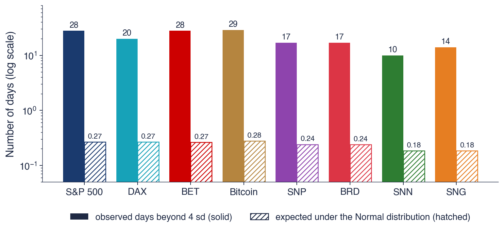
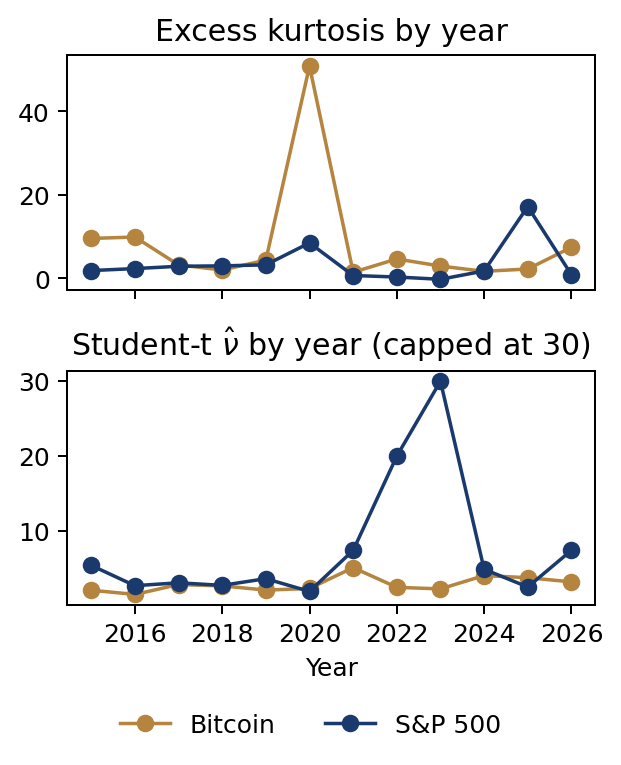

Chapter 2: Classical distributions and stylised facts
Daniel Traian PELE
Bucharest University of Economic Studies IDA Institute Digital Assets Blockchain Research Center AI4EFin Artificial Intelligence for Energy Finance Romanian Academy, Institute for Economic Forecasting MSCA Digital Finance
On 16 March 2020 the log return of the S&P 500 index was −12.8% in a single day. The standard deviation of daily returns over 2010–2026 is 1.08%, so the fall was about 11.8 standard deviations below the mean. If daily returns followed the Normal distribution, the probability of such a day would be of the order of \(10^{-32}\). Yet days of this kind occur in every major crisis: 19 October 1987, October 2008, March 2020, April 2025.
The chapter starts from the benchmark model of classical quantitative finance: independent, identically distributed and Normal log returns. Lognormal prices follow from it, and the central limit theorem seems to justify it. The chapter then measures how far real returns are from this model, with sample moments, the Jarque–Bera test and QQ plots, and fits a heavy-tailed alternative, the Student-t distribution.
The data are eight daily series over 2010–2026: the S&P 500, DAX, BET, Bitcoin and four stocks of the Bucharest Stock Exchange (BVB). Six stylised facts of returns, in the sense of Cont (2001), are checked on them. A day more than 4 standard deviations from the mean should occur, under the Normal distribution, once in 63 years; in the S&P 500 it has occurred 28 times since 2010.

Number of days more than 4 standard deviations from the mean, on a logarithmic vertical axis, for the eight series over 2010–2026: the solid bars show the observed days, the hatched bars the number expected if returns were Normal, between 0.18 and 0.28 days.
What you will be able to do
Compute probabilities and quantiles of the Normal and lognormal distributions.
State the central limit theorem (CLT) and say when the Normal approximation works.
Estimate skewness and excess kurtosis and test normality with the Jarque–Bera test.
Read a QQ plot and fit a Student-t distribution by maximum likelihood.
Check six stylised facts of returns and explain what each means for a model.
Chapter plan
Why the Distribution MattersA day of −11.8 standard deviations, what a distribution is used for, and the i.i.d. Normal benchmark.
The Normal DistributionThe definition, the properties used in finance, and how rare large moves are under it.
Stylised Facts of ReturnsSix properties shared by markets, checked on eight series, and what they require of a model.
AI for Scientific DiscoveryAre Bitcoin's tails getting thinner? How AI could help, what to check, and a project seed.
SummaryThe chapter's formulas and self-check questions.
Why the Distribution Matters
The distribution of returns is the starting point of almost every calculation in quantitative finance: the probability of a large loss, the price of an option, the confidence interval of a mean. This section shows, with a single day in March 2020, how badly the Normal distribution fails in the tails, explains why this failure matters, and states the benchmark model that the rest of the chapter tests.
On 16 March 2020, at the start of the COVID-19 pandemic, the S&P 500 index fell by 12.8%, measured as a log return, in a single trading day. To judge the size of this fall, it is set against the usual variability of the index. The standard deviation of the daily log returns of the S&P 500 over 2010–2026 is 1.08%, so 16 March 2020 lay −11.8 standard deviations from the mean.
If daily returns followed the Normal distribution with this mean and standard deviation, the probability of a day as bad would be about \(2 \times 10^{-32}\). With 252 trading days a year, such a day would occur less than once in \(10^{29}\) years. It is not an isolated case: days of the same kind occurred on 19 October 1987, in October 2008, in March 2020 and in April 2025.
The argument is that of any statistical test. An event to which a model gives a probability of the order of \(10^{-32}\), and which is nevertheless observed several times within a few decades, is not an accident of the market but evidence against the model. The slide's conclusion, "the model, not the market, is wrong", is the starting point of the chapter: one has to measure how far real returns are from the Normal distribution and find models that reproduce what is observed.
In brief
16 March 2020: the S&P 500 fell by \(-12.8\%\) (log return) in one day
Daily standard deviation 2010–2026: \(1.08\%\), so the fall was \(-11.8\) standard deviations
under the Normal distribution, the probability of such a day is about \(2 \times 10^{-32}\)
that is, less than once in \(10^{29}\) years of trading
Yet such days happen: 19 October 1987, October 2008, March 2020, April 2025
Conclusion: the model, not the market, is wrong
Question for the Room: How Often Is a 4-Sigma Day?
A \(k\)-sigma day is a day on which the return lies more than \(k\) standard deviations from the mean, in either direction. The measure is free of units, so it allows markets with very different volatilities to be compared, for example a stock index and Bitcoin. The question for the room asks for two estimates: how often a 4-sigma day would occur if returns were Normal, and how often it actually occurs in the S&P 500.
Under the Normal distribution, the probability that a variable lies more than 4 standard deviations from its mean is about \(6.3 \times 10^{-5}\). A 4-sigma day would therefore occur once every 15,787 trading days, about once in 63 years. An investor would see, on average, less than one such day in an entire career.
In the S&P 500, between 2010 and 2026, there were 28 four-sigma days out of 4,201 trading days: one every 150 days, about 1.7 days a year. The gap to the Normal distribution is not a few per cent but two orders of magnitude. The section on stylised facts shows that the ratio is of the same order in every market studied.
In brief
A \(k\)-sigma day: a daily return more than \(k\) standard deviations away from the mean
What do you think? If daily returns were Normal, how often would a 4-sigma day occur?
What do you think? How often does it occur in the S&P 500 since 2010?
Answer
Normal distribution: once every 15 787 trading days, about once in 63 years
S&P 500: 28 days in 4 201 days, once every 150 days, about 1.7 per year
The first use is risk measurement. Value at Risk (VaR) at the 1% level, written VaR 1%, is the loss exceeded with probability 1%. It is a quantile of the return distribution: if \(q_{0.01}\) is the 1% quantile of the return, then \(\text{VaR}_{0.01} = -q_{0.01}\). Its value depends almost entirely on the shape of the left tail, so a distribution with tails that are too thin gives a VaR that is too low. Risk measures are covered in Chapter 10.
The second use is the pricing of derivatives. The Black–Scholes formula assumes that the price of the underlying is lognormal at maturity, which is equivalent to Normal log returns. A deep out-of-the-money option pays only if the price makes a large move. If large moves are more frequent than the Normal distribution predicts, such options are worth more than the formula says.
The third use is inference. The usual \(t\)-tests and confidence intervals assume that the statistics involved are, at least approximately, Normal. When the data have heavy tails, standard errors are unreliable in small samples and tests no longer keep their nominal levels. In all three cases a wrong distribution gives wrong results even when the data are perfectly correct.
In brief
Risk: the probability of a large loss
VaR 1% (Value at Risk): the loss exceeded with probability 1%; a quantile of the distribution (Chapter 10)
Pricing: the Black–Scholes formula assumes lognormal prices
heavier tails make deep out-of-the-money options more valuable
Inference: \(t\)-tests and confidence intervals assume (approximate) normality
heavy tails make standard errors unreliable in small samples
A wrong distribution gives wrong numbers, even with perfect data
Let \(P_t\) be the price of an asset at the close of day \(t\) and \(r_t = \ln(P_t/P_{t-1})\) the log return. The advantage of log returns is that they add up over time: \(P_t = P_{t-1}e^{r_t}\), so \(P_t = P_0 e^{r_1 + \dots + r_t}\). The price at any date follows from the initial price and the sum of the intermediate log returns.
The benchmark model of the chapter assumes that the returns \(r_t\) are i.i.d., that is, independent and identically distributed, with the Normal distribution \(N(\mu, \sigma^2)\);\(\mu\) and \(\sigma^2\) are the daily mean and variance of the log returns. In this model the log price is a random walk with Normal steps, and the price follows a geometric random walk and is lognormal (Osborne, 1959). The first model of this kind, written for arithmetic price changes rather than log returns, is due to Bachelier (1900).
The model contains three distinct assumptions: normality, identical distribution over time, and independence. The chapter checks them in turn. The sections on moments, testing normality and the Student-t distribution concern the first assumption; the stylised facts on volatility clustering and the leverage effect concern the other two. Each violated assumption calls for a different correction of the model.
notation: i.i.d. = independent and identically distributed
Benchmark: \(r_t\) i.i.d. \(N(\mu, \sigma^2)\)
\(N(\mu, \sigma^2)\): the Normal distribution with mean \(\mu\) and variance \(\sigma^2\) (daily mean and variance of the log returns)
prices follow a geometric random walk; \(P_t\) is lognormal Osborne (1959)
the first model of this kind, for arithmetic price changes: Bachelier (1900)
This chapter tests each assumption of the benchmark in turn: normality, identical distribution and independence
Section summary
The i.i.d. Normal model gives a day like 16 March 2020 a probability of practically zero, and 4-sigma days occur in the S&P 500 about a hundred times more often than it predicts. Errors in the tails pass directly into VaR, option prices and inference. The next section presents the Normal distribution in detail, to see exactly what the benchmark model assumes.
The Normal Distribution
The Normal distribution is the default model of returns in classical finance and the reference against which every departure in this chapter is measured. This section presents its origin, its definition, the properties that made it attractive in finance and, above all, how quickly the probabilities in its tails fall. The worked example compares these probabilities with the frequency of large losses of the S&P 500 and the BET.
The bell curve has three historical sources. De Moivre obtained it in 1733 as the limit of binomial probabilities, that is, as an approximation to the number of successes in a large number of trials. Gauss used it in 1809 for the errors of astronomical observations and derived least squares from it: if the errors are Normal, the maximum likelihood estimator of the parameters is the one that minimises the sum of squared errors. Hence its other name, the Gaussian distribution.
Laplace proved a first version of the central limit theorem in 1810, which explains why the Normal distribution appears whenever a quantity is the sum of many small, independent effects. This justification was later carried over to returns, as sums of many small price changes.
In finance the Normal distribution became the default model of returns also for convenience: sums of independent Normal variables are again Normal, so multi-day returns and portfolio returns stay in the same family. The rest of the chapter shows what this convenience costs.
In brief
De Moivre (1733) found the bell curve as the limit of binomial probabilities
Gauss (1809) used it for the errors of astronomical observations and derived least squares from it
Laplace (1810) proved a first version of the central limit theorem
Hence its other name: the Gaussian distribution
In finance it became the default model of returns, because sums of Normal variables stay Normal
A random variable \(X\) has the Normal distribution with mean \(\mu\) and variance \(\sigma^2\), written \(X \sim N(\mu, \sigma^2)\), if its probability density function (PDF) is
\[f(x) = \frac{1}{\sigma\sqrt{2\pi}} \exp\Big(-\frac{(x - \mu)^2}{2\sigma^2}\Big), \qquad x \in \mathbb{R}.\]
(2.1)
The parameter \(\mu\) sets the location of the centre and \(\sigma^2\) the spread around it. In (2.1), the density depends on \(x\) only through the standardised distance \((x-\mu)/\sigma\), squared in the exponent.
After standardisation, \(Z = (X - \mu)/\sigma\) has the standard Normal distribution \(N(0, 1)\). Its cumulative distribution function (CDF), \(\Phi(z) = P(Z \le z)\), has no closed form and is computed numerically, with tables or software. Every probability for \(X\) reduces to \(\Phi\):\(P(X \le x) = \Phi\big((x - \mu)/\sigma\big)\).
The quantile of order \(\alpha\) of \(X\) is the value \(x_\alpha\) with \(P(X \le x_\alpha) = \alpha\); it is \(x_\alpha = \mu + \sigma z_\alpha\), where \(z_\alpha = \Phi^{-1}(\alpha)\) is the quantile of the standard Normal distribution. Two values recur in risk measurement: \(z_{0.01} = -2.33\) and \(z_{0.05} = -1.64\). For example, if the daily return is \(N(\mu, \sigma^2)\), VaR 1% is \(-(\mu + \sigma z_{0.01}) = 2.33\,\sigma - \mu\).
In brief
\(X \sim N(\mu, \sigma^2)\) has the PDF (probability density function)
The Normal distribution is symmetric around \(\mu\), so its mean, median and mode coincide. Its skewness is 0 and its kurtosis 3; both are defined in the section on moments, where they serve as the reference for real returns.
The most used property is closure under addition. If \(X \sim N(\mu_1, \sigma_1^2)\) and \(Y \sim N(\mu_2, \sigma_2^2)\) are independent, then \(X + Y \sim N(\mu_1 + \mu_2, \sigma_1^2 + \sigma_2^2)\). Under the benchmark, the \(h\)-day log return is the sum of \(h\) i.i.d. daily returns, so \(r_t(h) \sim N(h\mu, h\sigma^2)\). The mean grows in proportion to \(h\) and the standard deviation with \(\sqrt{h}\): this is the square-root-of-time rule of Chapter 1.
More generally, every linear combination of jointly Normal returns is Normal, so the return of any portfolio stays Normal. Finally, the distribution is fully determined by two parameters: once \(\mu\) and \(\sigma\) are known, every probability and every quantile can be computed. The same property is also a weakness, because the shape of the tails is fixed together with the mean and variance and cannot be adjusted separately.
In brief
Symmetric around \(\mu\): mean = median = mode
Skewness \(0\) and kurtosis \(3\) (defined in Section 5)
Closed under addition: if \(X \sim N(\mu_1, \sigma_1^2)\) and \(Y \sim N(\mu_2, \sigma_2^2)\) are independent, then \(X + Y \sim N(\mu_1 + \mu_2, \sigma_1^2 + \sigma_2^2)\)
\(h\)-day log return under the benchmark: \(r_t(h) \sim N(h\mu, h\sigma^2)\)
volatility grows with \(\sqrt{h}\): the square-root-of-time rule used in Chapter 1
Linear combinations of jointly Normal returns are Normal, so portfolio returns stay Normal
Fully described by two numbers: once \(\mu\) and \(\sigma\) are known, every probability is known
Normal distribution: P(|Z| > k) and how often such a day occurs; the observed days of the chosen series
Share of days within k standard deviations of the mean (the 68–95–99.7 rule)
Question for the room Under the Normal distribution, 68.27% of the days lie within one standard deviation of the mean. What share of S&P 500 days, 2010–2026, lies within one standard deviation of the mean?
Answer
79.1%, more than under the Normal distribution. A few extreme days inflate the standard deviation, and most days are small relative to it: the centre of the distribution is taller. Within two standard deviations the share is 95.3%, close to 95.45%; beyond three standard deviations there are 62 days instead of 11.3. For the eight series, the share within one standard deviation is between 75.7% (BRD) and 81.4% (BET).
Days with a log return below −x%: observed and expected under the Normal distribution
Question for the room The S&P 500 has 49 days below −3%, against 10.5 expected under the Normal distribution with the same mean and standard deviation. For Bitcoin, with the same threshold of −3%, are there more or fewer such days than the series’ Normal distribution expects?
Answer
Fewer: 512 days, against 813 expected. Bitcoin’s standard deviation is 3.49%, so −3% is only 0.89 standard deviations below the mean, between the centre and the tail, where heavy-tailed returns have fewer days than the Normal distribution. Heavy tails show at thresholds of several standard deviations: below −10% (2.90 standard deviations), Bitcoin has 56 days, against 8.1 expected. A threshold in % compares series only when their volatilities are similar.
Question for the room Under the Normal distribution, a day beyond 3 standard deviations occurs once in 370 days. The ▶ button moves the threshold up to 6. How many times rarer is a day beyond 4 standard deviations?
Answer
About 43 times. P(|Z| > 4) = 0.0063%, one day in 15,787, about 63 years of trading at 252 days a year; P(|Z| > 3) = 0.27%, one day in 370. The ratio of the densities at 3 and 4, φ(3)/φ(4) = 33, is not the ratio of the tail probabilities. At 6 standard deviations, the Normal distribution gives one day in 507 million.
The chart shows the standard Normal density as a function of \(z = (x - \mu)/\sigma\). The blue area covers values within one standard deviation of the mean, the green area those between one and two standard deviations, and the brown area those between two and three. The cumulative probabilities are 68.27% within one standard deviation, 95.45% within two and 99.73% within three.
The remaining 0.27% lies beyond three standard deviations, in both tails: about one day in 370. On the chart the curve seems to touch the horizontal axis already at \(\pm 3\). The reason is the shape of the density: away from the centre it falls like \(e^{-z^2/2}\), faster than any exponential in \(|z|\). Each further step into the tails cuts the probability much more than the one before.
For returns, this property means that the Normal distribution gives large moves very small probabilities. The next table quantifies this.
In brief
Within 1, 2 and 3 standard deviations: 68.27%, 95.45% and 99.73% of the probability
Outside 3 standard deviations: one day in 370; the tails of the Normal distribution fall off like \(e^{-z^2/2}\), very fast
For \(k\) from 1 to 6, the table gives the probability \(P(|Z| > k)\) that a standard Normal variable lies more than \(k\) standard deviations from 0, and its inverse expressed in trading days and in years, with 252 trading days a year. A one-standard-deviation move occurs once every 3 days, a two-standard-deviation move once every 22 days, and a three-standard-deviation move once every 370 days, about once in a year and a half.
Beyond this threshold the frequencies collapse. A 4-sigma day, with probability \(6.3 \times 10^{-5}\), occurs once every 15,787 days, once in 63 years. A 5-sigma day occurs once in 6,922 years, and a 6-sigma day once in more than two million years. Each extra standard deviation makes a move 7 to 291 times rarer, and the factor grows with \(k\), a direct consequence of the \(e^{-z^2/2}\) decay.
According to this table, a 6-sigma day should not happen in the whole history of stock markets. The table in the section on stylised facts shows that the S&P 500 has had 8 such days since 2010 alone. The comparison needs no formal test: the gap is several orders of magnitude.
In brief
\(k\)
\(P(|Z| > k)\)
once every … trading days
once every … years
1
\({0.3173}\)
3
0.013
2
\({0.0455}\)
22
0.087
3
\({2.7 \times 10^{-3}}\)
370
1.5
4
\({6.3 \times 10^{-5}}\)
15 787
63
5
\({5.7 \times 10^{-7}}\)
1 744 278
6 922
6
\({2.0 \times 10^{-9}}\)
506 797 346
2 011 101
\(P(|Z| > k)\): the probability that a standard Normal variable lies more than \(k\) standard deviations from 0
Years computed with 252 trading days a year
Each extra standard deviation makes a move 7 to 291 times rarer
A 6-sigma day should not happen in the whole history of stock markets
The example compares the frequency predicted by the Normal distribution with the observed frequency of large losses. The data are the 4,201 daily log returns of the S&P 500 over 2010–2026, with mean 0.045% and standard deviation 1.08%. A loss larger than 3% corresponds to the standardised value \(z = (-3 - 0.045)/1.08 = -2.81\). Under the Normal distribution its probability is \(\Phi(-2.81) = 0.25\%\), so the expected number of such days in the sample is 10.5. The observed number is 49, almost five times as many.
For losses larger than 5% the standardised value is \(z = -4.65\), and the number expected under the Normal distribution is \(6.9 \times 10^{-3}\) days: such a day should be absent from the sample with probability above 99%. In fact there were 8 such days. For the BET, the number of days with returns below −5% is 13, against \(5.1 \times 10^{-3}\) days expected.
The ratio of observed to predicted frequency grows with the size of the loss: about 5 at the 3% threshold and more than a thousand at the 5% threshold. The Normal distribution describes ordinary days acceptably, but underestimates the frequency of large losses by several orders of magnitude, precisely in the region that matters for risk management.
In brief
S&P 500, 2010–2026: \(n = 4\,201\) daily log returns, mean \(0.045\%\), standard deviation \(1.08\%\)
A loss larger than 3%: \(z = (-3 - 0.045)/1.08 = -2.81\)
Normal distribution: \(\Phi(-2.81) = 0.25\%\), so \(10.5\) days expected
observed: 49 days
A loss larger than 5%: \(z = -4.65\)
Normal distribution: \(6.9 \times 10^{-3}\) days expected; observed: 8 days
BET: 13 days below \(-5\%\) against \(5.1 \times 10^{-3}\) expected
The Normal distribution underestimates the frequency of large losses by orders of magnitude
The Normal distribution has two parameters, is symmetric and is closed under addition; under the benchmark, the volatility over \(h\) days grows with \(\sqrt{h}\). These properties make calculations simple and explain its popularity in finance.
Its weakness is the shape of its tails. The density falls like \(e^{-z^2/2}\), and a 4-sigma day should occur once in 63 years. Real returns have many more large moves: the S&P 500 had 49 days with losses above 3%, against 10.5 expected, and 8 days with losses above 5%, against practically none.
In brief
Two parameters, symmetric, closed under addition, volatility scales with \(\sqrt{h}\)
Its tails are thin: a 4-sigma day once every 63 years
Real returns have many more large moves than it allows
Section summary
The Normal distribution is convenient, but its tails are too thin for daily returns. Up to three standard deviations the predicted and observed frequencies are of the same order; beyond that threshold the gap becomes several orders of magnitude. The next section follows the consequence of the benchmark for prices: if log returns are Normal, prices are lognormal.
The Lognormal Distribution
The benchmark model describes log returns, but an investor cares about prices and the value of the investment. If log returns are Normal, the price at a given horizon has the lognormal distribution. This section defines the distribution, explains why its mean, median and mode differ, and applies the results to an investment in the BET index.
A positive variable \(Y\) has the lognormal distribution, \(Y \sim LN(m, s^2)\), if its logarithm is Normal: \(\ln Y \sim N(m, s^2)\). The parameters \(m\) and \(s^2\) are the mean and variance of \(\ln Y\), not of \(Y\); this distinction is the source of the most common calculation errors. The density follows from the Normal density by the change of variable \(y = e^x\):
\[f(y) = \frac{1}{y\, s\sqrt{2\pi}} \exp\Big(-\frac{(\ln y - m)^2}{2s^2}\Big), \qquad y > 0.\]
(2.2)
The factor \(1/y\) in (2.2) comes from the change of variable and makes the density skewed to the right.
Under the benchmark, \(\ln(P_T/P_0) = r_1 + \dots + r_T\) is a sum of \(T\) i.i.d. Normal daily returns, so \(\ln(P_T/P_0) \sim N(T\mu, T\sigma^2)\), where \(T\) is the horizon in days. Hence \(P_T/P_0 \sim LN(T\mu, T\sigma^2)\): the ratio of the final to the initial price is lognormal (Osborne, 1959).
The choice has an economic justification. A price cannot be negative, but a Normal variable takes negative values with positive probability. A lognormal price is always positive, and the corresponding simple return, \(R = e^r - 1\), is greater than −1: an investor without leverage cannot lose more than was invested. The Black–Scholes option pricing model is built on this distribution.
In brief
A positive variable \(Y\) is lognormal, \(Y \sim LN(m, s^2)\), if \(\ln Y \sim N(m, s^2)\)
\(m\), \(s^2\): the mean and the variance of \(\ln Y\), not of \(Y\)
For \(Y \sim LN(m, s^2)\) the three measures of location differ. The median, the value exceeded with probability 1/2, is \(e^m\), because the exponential preserves order and the median of \(\ln Y\) is \(m\). The mode, the value with the highest density, is \(e^{m - s^2}\). The mean and the variance are
Always mode < median < mean, which characterises a distribution with a long right tail, that is, with positive skewness.
The formula for the mean in (2.3) follows from the identity \(E[e^X] = e^{m + s^2/2}\) for \(X \sim N(m, s^2)\), proved by completing the square in the exponent of the integral; Seminar 2 derives it step by step. The extra term \(s^2/2\) between the log of the mean and the log of the median is the volatility drag of Chapter 1, seen from the side of prices: the mean of the final value exceeds the typical value the more, the higher the volatility.
Which of these quantities matters depends on the question. The median describes the outcome of a typical investor: half of the possible paths end below it. The mean is pulled up by a few very good paths and describes the average outcome over a large number of investors, not the outcome of any one of them.
In brief
If \(Y \sim LN(m, s^2)\):
median \(e^{m}\); mode \(e^{m - s^2}\); mean \(E[Y] = e^{m + s^2/2}\)
mode: the most likely value; median: the value exceeded with probability 1/2
always mode \(<\) median \(<\) mean: a long right tail (positive skewness)
Question for the room For 100 lei invested in the BET, the probability of a loss is 24.8% after one year and 1.5% after ten years. The ▶ button raises the horizon up to 20 years. What is the probability of a loss after 20 years?
Answer
0.11%: Φ(−μ√T/σ) = Φ(−0.682 × √20) = Φ(−3.05). The mean of the log return grows with T and its standard deviation with √T, so the ratio μ√T/σ grows with √T. The median becomes 1,009.6 and the mean 1,345.6: the gap between them widens with the horizon. The calculation assumes that the mean log return of 2010–2026, 11.6% a year, persists and that log returns are Normal and independent; for the S&P 500 the same calculation gives 0.15%, for Bitcoin 0.19%.
Question for the room The ▶ button raises s from 0.1 to 1.5. What happens to the mode, the median and the mean of the lognormal distribution LN(0, s²)?
Answer
The median stays at 1, because em does not depend on s. The mean es²/2 rises to 3.08 and the mode e−s² falls to 0.105. At s = 1, the mean is 1.65, the mode 0.37 and the skewness 6.18. The gap between mean and median grows with volatility and with the horizon, through s = σ√T.
The chart shows three lognormal densities of the ratio \(x = P_T/P_0\), all with \(m = 0\) and with \(s = 0.25\) (blue), \(s = 0.5\) (red) and \(s = 1\) (green). Because \(m = 0\), the median is 1 for all three curves; the black dotted line marks it. The dashed lines, in the colour of each curve, mark the means \(e^{s^2/2}\).
For \(s = 0.25\) the mean is 1.03 and the mode 0.94: the density is almost symmetric and the three measures of location are close. For \(s = 1\) the mean rises to 1.65, the mode falls to 0.37, and the skewness reaches 6.18. The green curve peaks far to the left of the median and has a right tail that extends beyond the edge of the chart.
The parameter \(s\) of the ratio \(P_T/P_0\) is \(\sigma\sqrt{T}\), so it grows both with volatility and with the horizon. At long horizons or for very volatile assets the gap between mean and median becomes large, and the mean stops being a useful summary of the typical outcome.
In brief
\(m = 0\): the median is 1 for all three curves; the dashed lines mark the means
\(s = 0.25\): mean \(1.03\), mode \(0.94\), almost symmetric; \(s = 1\): mean \(1.65\), mode \(0.37\), skewness \(6.18\)
Long horizons or high volatility: the gap between mean and median widens
The example applies the lognormal model to an investment of 100 lei in the BET index. Over 2010–2026 the annual mean log return of the BET is \(\mu = 11.6\%\) and its annual volatility is \(\sigma = 16.9\%\); both come from the daily moments, multiplying the mean by 251 and the standard deviation by \(\sqrt{251}\). After one year, \(P_1/P_0 \sim LN(\mu, \sigma^2)\). The median value of the investment is \(100e^{\mu} = 112.3\) lei and the mean value \(100e^{\mu + \sigma^2/2} = 113.9\) lei.
The probability of a loss after one year is the probability of a negative log return, \(P(r < 0) = \Phi(-\mu/\sigma) = 24.8\%\): about one year in four. The 5% quantile of the value of the investment is \(100e^{\mu - 1.645\sigma} = 84.9\) lei, where \(-1.645 = z_{0.05}\); with probability 5% the investor loses more than 15.1 lei.
After 10 years, \(P_{10}/P_0 \sim LN(10\mu, 10\sigma^2)\). The median becomes 317.7 lei, the mean 366.8 lei, the probability of a loss 1.5%, and the 5% quantile 131.6 lei. The probability of a loss is \(\Phi(-\sqrt{T}\,\mu/\sigma)\) and falls with the horizon \(T\), because the mean grows in proportion to \(T\) and the standard deviation only with \(\sqrt{T}\). The result rests, however, on two assumptions: that the historical mean of 11.6% a year persists, and that log returns are Normal and independent. Every weakness of the Normal model, documented in the rest of the chapter, carries over to these numbers.
In brief
BET, 2010–2026: annual mean log return \(\mu = 11.6\%\) and volatility \(\sigma = 16.9\%\) (daily moments \(\times\) 251 and \(\sqrt{251}\))
After 1 year, \(P_1/P_0 \sim LN(\mu, \sigma^2)\)
median \(100e^{\mu} = 112.3\); mean \(100e^{\mu + \sigma^2/2} = 113.9\)
probability of a loss \(\Phi(-\mu/\sigma) = 24.8\%\); 5% quantile \(100e^{\mu - 1.645\sigma} = 84.9\)
\(\Phi(-\mu/\sigma) = P(r < 0)\): the probability of a negative log return; \(-1.645 = z_{0.05}\)
After 10 years, \(P_{10}/P_0 \sim LN(10\mu, 10\sigma^2)\)
median 317.7; mean 366.8; probability of a loss 1.5%; 5% quantile 131.6
The probability of a loss falls with the horizon; after 10 years even the 5% quantile is above 100, but only if the historical mean persists
Caveat: these numbers inherit every weakness of the Normal model of log returns
If log returns are Normal, prices are lognormal: positive and skewed to the right. The median \(e^m\) is below the mean \(e^{m + s^2/2}\), and the difference of their logarithms, \(s^2/2\), is the volatility drag.
For an investment, the mean alone is a misleading summary, especially at long horizons. A complete report gives the median, which describes the typical investor, and a low quantile, for example the 5% quantile, which describes the adverse scenario.
In brief
Normal log returns \(\Rightarrow\) lognormal prices: positive, right-skewed
Median \(e^m\) below mean \(e^{m + s^2/2}\): the gap is the volatility drag
Report the median and a low quantile, not only the mean
Section summary
The lognormal distribution is the direct consequence of the benchmark model for prices. It explains why the mean and the median of an investment diverge at long horizons and why the probability of a loss falls with the horizon. All these results, however, assume Normal log returns. The next section examines the theoretical argument usually given for this assumption: the central limit theorem.
The Central Limit Theorem
The classical justification of the Normal distribution for returns is the central limit theorem: a daily return is the sum of many small changes during the day, and sums of many i.i.d. variables with finite variance are approximately Normal. This section states the theorem, shows by simulation how fast it works, and discusses why returns may not satisfy its conditions.
The Galton board, described by Francis Galton in 1889, is a mechanical device that illustrates the central limit theorem. Balls fall through rows of pins; at each pin a ball bounces left or right with probability 1/2, independently of the other collisions. The final position of a ball is therefore a sum of many small, independent shocks.
The number of moves to the right follows a binomial distribution, and the balls collected in the bins at the bottom form a bell curve close to the Normal density. The photograph shows a board after the balls have fallen: the central bins are the fullest, and the heights fall symmetrically towards the edges.
The same argument was applied to returns. A daily log return is the sum of the log returns of many short intervals during the day. If these components were independent and identically distributed, the daily return should be close to Normal. The rest of the section sets out when this reasoning is correct.
In brief
Francis Galton (1889): balls fall through rows of pins and bounce left or right with probability \(1/2\)
The final position of a ball is a sum of many small independent shocks
The heaps form a bell curve: binomial probabilities close to the Normal density
The same argument was used for returns: a daily return is the sum of many small price changes during the day
The central limit theorem (CLT) in its Lindeberg–Lévy form starts from i.i.d. variables \(X_1, \dots, X_n\) with mean \(\mu\) and finite variance \(\sigma^2\). Let \(\bar X_n\) be their mean. Then
where \(\xrightarrow{d}\) denotes convergence in distribution: the CDF of the left-hand side approaches \(\Phi\) at every point. Equivalently, the sum \(X_1 + \dots + X_n\) is approximately \(N(n\mu, n\sigma^2)\).
The theorem has three conditions: independence of the terms, identical distribution, and finite variance. The distribution of the terms can be arbitrarily far from Normal, for example discrete or skewed; only the standardised mean becomes Normal. There are versions that weaken the first two conditions, but finite variance cannot be dropped: without it the limit, if one exists, is no longer Normal.
The speed of convergence is given by the Berry–Esseen bound: the largest gap between the CDF of the standardised mean and \(\Phi\) falls like \(1/\sqrt{n}\) and grows with the skewness of \(X\). The theorem explains why the Normal distribution appears so often in data, and why confidence intervals for a mean are built with Normal quantiles whatever the distribution of the data.
In brief
CLT (Lindeberg–Lévy): \(X_1, \dots, X_n\) i.i.d. with mean \(\mu\) and finite variance \(\sigma^2\)
Question for the room On the slide p = 0.2, and the skewness of the standardised mean is 0.27 for n = 30. The ▶ button lowers p from 0.5 to 0.02. With p = 0.02, is the skewness for n = 300 below 0.27?
Answer
No. The skewness of the mean is (1 − 2p)/√(np(1 − p)) = 0.96/√5.88 = 0.40 for n = 300 and p = 0.02, above the 0.27 for n = 30 and p = 0.2. The skewness falls as 1/√n, but from a level that depends on p: the further p is from 0.5, the more draws are needed. The page computes the exact distribution of the mean; the share above 1.96 for p = 0.2 is 5.8%, 2.6% and 2.8% (n = 5, 30, 300), and in the 20,000 simulations of the slide 5.8%, 2.7% and 2.8%.
The simulation uses a strongly skewed variable: a Bernoulli draw with success probability \(p = 0.2\). For \(n = 5\), 30 and 300 draws, the standardised mean of (2.4) is computed, and the experiment is repeated 20,000 times. Each panel compares the histogram of the 20,000 standardised means (bars) with the \(N(0,1)\) density (curve).
For \(n = 5\) the mean takes only six possible values, and the histogram is visibly skewed to the right. The share of values above 1.96, which should be 2.5% under the Normal distribution, is 5.8%, more than double. For \(n = 30\) the share falls to 2.7%, and for \(n = 300\) it is 2.8%; the histogram then lies practically on the curve.
The skewness of the mean of \(n\) Bernoulli(\(p\)) draws is \((1 - 2p)/\sqrt{np(1-p)}\). For \(p = 0.2\) it is 0.67 for \(n = 5\), 0.27 for \(n = 30\) and 0.09 for \(n = 300\): it falls like \(1/\sqrt{n}\), as the Berry–Esseen bound predicts. For a skewed variable, the Normal approximation needs tens of observations before it becomes acceptable in the tail.
In brief
Standardised mean of \(n\) Bernoulli(\(0.2\)) draws (a skewed variable), 20 000 simulations
Share above \(1.96\): 5.8% for \(n = 5\), 2.7% for \(n = 30\), 2.8% for \(n = 300\); Normal distribution: 2.5%
Skewness of the mean, \((1 - 2p)/\sqrt{np(1-p)}\) with \(p = 0.2\): \(0.67\), \(0.27\), \(0.09\); it falls like \(1/\sqrt{n}\)
Question for the room With p = 0.1, the ▶ button raises n from 5 to 200. The rule of thumb asks for np(1 − p) of at least about 9, that is n = 100. Does the largest CDF error fall below 0.01 by n = 200?
Answer
No. With the continuity correction, the largest CDF error is 0.037 at n = 20, 0.017 at n = 100 and 0.012 at n = 200. The rule np(1 − p) ≥ 9 says where the approximation becomes usable, not a guaranteed accuracy; the error falls slowly, roughly as 1/√n, with small oscillations from one n to the next. Without the continuity correction, the error at n = 20 is 0.177.
A binomial variable \(B(n, p)\) counts the successes in \(n\) independent trials, each with success probability \(p\). It is a sum of \(n\) i.i.d. Bernoulli variables, so by the central limit theorem \(B(n, p) \approx N\big(np, np(1-p)\big)\). The four panels compare the binomial probabilities (bars) with the Normal density with the same mean and variance (curve), for \((n, p)\) equal to \((5, 0.5)\),\((20, 0.5)\),\((20, 0.1)\) and \((100, 0.1)\).
A discrete variable is approximated by a continuous one with the continuity correction:
The \(+0.5\) spreads the probability of each integer \(k\) over the interval \([k - 0.5, k + 0.5]\), so that the area under the density matches the corresponding bar.
The quality of the approximation depends on symmetry more than on \(n\). The largest error of the CDF is 0.001 for \(n = 20\),\(p = 0.5\), where the binomial is symmetric; 0.037 for \(n = 20\),\(p = 0.1\), where it is strongly skewed; and 0.017 for \(n = 100\),\(p = 0.1\). The rule of thumb asks for a large variance \(np(1-p)\), at least about 9.
In brief
\(B(n, p)\): the number of successes in \(n\) independent trials with success probability \(p\); \(B(n, p) \approx N\big(np, np(1-p)\big)\)
Continuity correction: \(P(X \le k) \approx \Phi\big((k + 0.5 - np)/\sqrt{np(1-p)}\big)\); the \(+0.5\) spreads each integer \(k\) over \([k - 0.5, k + 0.5]\)
Largest error of the CDF: \(0.001\) for \(n = 20, p = 0.5\); \(0.037\) for \(n = 20, p = 0.1\); \(0.017\) for \(n = 100, p = 0.1\)
Rule of thumb: the approximation is good when \(np(1-p)\) is large (at least about 9)
A daily log return is the sum of thousands of intraday log returns. The question for the room is whether the central limit theorem then guarantees nearly Normal daily returns. The answer is: not necessarily, because each of the three conditions of the theorem can fail.
The first condition, independence, is contradicted by the clustering of calm and turbulent days documented in the section on stylised facts: the size of price changes is autocorrelated, even if their sign is not. The second condition, identical distribution, is contradicted by the fact that volatility differs from day to day and from period to period, so the intraday components do not have the same distribution on every day.
The third condition, finite variance, was questioned by Mandelbrot (1963), who proposed distributions with infinite variance for cotton price changes. For sums of such variables the limit is not the Normal distribution but an \(\alpha\)-stable distribution, studied in Chapter 3. Theory alone does not decide which condition fails and by how much; the next sections measure directly on the data how far returns are from the Normal distribution.
In brief
A daily log return is the sum of thousands of intraday log returns
What do you think? Should daily returns then be close to the Normal distribution?
Answer: not necessarily; each condition of the CLT can fail
dependence: calm and turbulent days come in clusters (Section 8)
changing distribution: volatility differs from day to day
infinite variance: Mandelbrot (1963) proposed it for cotton prices (Chapter 3, \(\alpha\)-stable distributions)
The data decide: the next sections measure how far returns are from the Normal distribution
Sums of many i.i.d. terms with finite variance are approximately Normal, whatever the distribution of the terms. Convergence is slower for skewed variables: in the simulation, the mean of 5 Bernoulli(0.2) draws has more than twice as many values above 1.96 as the Normal distribution predicts. For the binomial, the rule of thumb is \(np(1-p) \ge 9\).
Returns may violate any of the three conditions: independence, identical distribution or finite variance. The theorem explains why the Normal distribution is a natural candidate, but it does not guarantee that daily returns follow it.
In brief
Sums of many i.i.d. terms with finite variance are approximately Normal
Convergence is slower for skewed variables; \(np(1-p) \ge 9\) for the binomial
Returns may violate independence, identical distribution or finite variance
Section summary
The central limit theorem is the theoretical argument for the benchmark model, but it depends on conditions that returns need not satisfy. The simulations also show that even when the conditions hold, convergence in the tails can be slow. The next section introduces the tools that measure the shape of a distribution directly: skewness and kurtosis.
Moments and the Shape of a Distribution
The mean and the variance describe the location and the spread of a distribution, but not its shape. This section introduces two unit-free quantities that describe shape: skewness, based on the third central moment, and kurtosis, based on the fourth. For the Normal distribution they take the fixed values 0 and 3, so their departure from these values measures how far the data are from the benchmark model. The section estimates them for the chapter's eight series and shows how sensitive they are to a few observations.
The first two moments are the mean \(\mu = E[X]\) and the variance \(\sigma^2 = E[(X - \mu)^2]\), where \(E[\cdot]\) is the expected value. The next two are defined on the standardised deviations \((X - \mu)/\sigma\), so they do not depend on the unit of measurement:
The skewness \(\gamma_1\) uses the third power, which keeps the sign of each deviation. Large negative and positive deviations cancel only if the distribution is symmetric. A value \(\gamma_1 < 0\) indicates a longer left tail: large losses are more frequent or larger than large gains.
The kurtosis \(\gamma_2\) uses the fourth power, which ignores the sign and magnifies large deviations. For the Normal distribution \(\gamma_2 = 3\), which is why the excess kurtosis \(\gamma_2 - 3\) is usually reported. A positive excess means heavy tails and a tall, narrow centre; such a distribution is called leptokurtic. Both quantities describe the shape, not the location or the scale. The fourth power has a cost: a single deviation of 10 standard deviations contributes as much to the fourth moment as ten thousand deviations of one standard deviation, so the kurtosis is very sensitive to a few extreme days.
In brief
Mean \(\mu = E[X]\); variance \(\sigma^2 = E[(X - \mu)^2]\); \(E[\cdot]\) is the expected value
Skewness: \(\gamma_1 = E[(X - \mu)^3]/\sigma^3\)
the third power keeps the sign of each deviation; \(\gamma_1 < 0\): a longer left tail, large losses more frequent than large gains
Question for the room On the slide, the shape parameter α = 5 gives a skew-Normal density with skewness 0.85. The ▶ button raises α from 0 to 20 (and lowers ν from 40 to 4.5 in the left panel). What is the skewness of the density at α = 20?
Answer
0.99. The skewness of the skew-Normal family grows with α but has a limit of about 0.995: at α = 10 it is 0.96, at α = 20 it is 0.99. A larger skewness cannot be obtained with this family. The excess kurtosis of the unit-variance Student-t distribution is 6/(ν − 4): 6 for ν = 5, 1 for ν = 10.
The left panel compares two densities with the same mean, 0, and the same variance, 1: the Normal distribution, with excess kurtosis 0, and the Student-t distribution with 5 degrees of freedom, rescaled to unit variance, with excess kurtosis 6. The Student-t distribution is defined in Section 7. Although the variances are equal, the shapes differ: the Student-t curve has more mass in the centre and in the tails and less in the shoulders, the region about one to two standard deviations from the mean.
This redistribution is the correct reading of excess kurtosis. Kurtosis does not measure only the "peak" of a distribution, but the shift of mass out of the shoulders towards both the centre and the tails, at constant variance. A leptokurtic series therefore has more very calm days and more extreme days than a Normal series with the same volatility.
The right panel shows two skew-Normal densities, with skewness −0.85 (green) and +0.85 (purple), next to the Normal density (dashed curve). The density with negative skewness has its peak shifted to the right and a longer left tail; the one with positive skewness is its mirror image. The daily returns of most series in the chapter have negative skewness.
In brief
Left: same mean and variance; the Student-\(t(5)\) curve (Section 7) has excess kurtosis 6: more mass in the centre and in the tails, less in the shoulders
Right: skew-Normal densities with skewness \(\pm 0.85\); the dashed curve is the Normal distribution
From \(n\) returns \(r_1, \dots, r_n\), the central moments are estimated by the sample moments \(m_k = \frac1n \sum_{t=1}^n (r_t - \bar r)^k\), the average \(k\)-th power of the deviations from the sample mean \(\bar r\);\(m_2\) is the sample variance. Sample skewness and excess kurtosis replace the population moments in (2.5) by sample moments:
\[S = \frac{m_3}{m_2^{3/2}}, \qquad K = \frac{m_4}{m_2^2} - 3.\]
(2.6)
If the data are i.i.d. Normal, the two statistics are approximately Normal and independent: \(S \approx N(0, 6/n)\) and \(K \approx N(0, 24/n)\). For \(n = 4{,}201\), the number of daily S&P 500 returns, the standard errors are \(\sqrt{6/n} = 0.038\) for skewness and \(\sqrt{24/n} = 0.076\) for excess kurtosis. These values are used to test normality in the next section.
The standard errors above hold only under normality. The variance of \(K\) depends on the eighth moment of the data; for heavy-tailed data this moment is very large or even infinite, and the true standard error of \(K\) is much larger than \(\sqrt{24/n}\).Seminar 2 compares the two standard errors for the S&P 500.
In brief
Central sample moments: \(m_k = \frac1n \sum_{t=1}^n (r_t - \bar r)^k\), the average \(k\)-th power of the deviations from the mean (\(m_2\): variance)
The table summarises the daily log returns of the chapter's eight series: the S&P 500, DAX and BET indices, Bitcoin, and four BVB stocks, OMV Petrom (SNP), BRD, Nuclearelectrica (SNN) and Romgaz (SNG). The series start in 2010, except Bitcoin, from 2014, and SNN and SNG, from 2013. The columns give the number of observations \(n\), the daily mean and standard deviation in per cent, the skewness \(S\), the excess kurtosis \(K\) and the lowest daily return.
Every series has excess kurtosis between 5.1 (SNN) and 17.9 (BET). Set against the standard error of 0.076 under normality, these values are huge: even the smallest exceeds 0 by dozens of standard errors. Volatilities differ widely, from 1.07% a day for the BET to 3.49% for Bitcoin, but the shape of the tails is of the same kind. Every series except SNN has negative skewness, the most pronounced being that of the BET, −0.98.
The column of minima ties the moments to concrete events. The worst day of the S&P 500 is 16 March 2020, at −12.8%; that of Bitcoin is 12 March 2020, at −46.5%; that of the BET is 19 December 2018, at −11.9%, the day Government Emergency Ordinance (OUG) 114 was announced, introducing a tax on bank assets. Such days account for a large part of the skewness and excess kurtosis.
In brief
Series
from
\(n\)
Mean %
S.d. %
Skew.
Exc. kurt.
Min %
S&P 500
2010
4 201
\(0.045\)
\(1.08\)
\(-0.61\)
\(13.5\)
\(-12.8\)
DAX
2010
4 244
\(0.034\)
\(1.22\)
\(-0.45\)
\(7.4\)
\(-13.1\)
BET
2010
4 186
\(0.046\)
\(1.07\)
\(-0.98\)
\(17.9\)
\(-11.9\)
Bitcoin
2014
4 384
\(0.118\)
\(3.49\)
\(-0.70\)
\(12.0\)
\(-46.5\)
OMV Petrom (SNP)
2010
3 815
\(0.076\)
\(1.62\)
\(-0.54\)
\(8.9\)
\(-15.8\)
BRD
2010
3 771
\(0.044\)
\(1.66\)
\(-0.38\)
\(7.3\)
\(-18.2\)
Nuclearelectrica (SNN)
2013
2 911
\(0.099\)
\(1.52\)
\(0.27\)
\(5.1\)
\(-9.4\)
Romgaz (SNG)
2013
2 909
\(0.090\)
\(1.40\)
\(-0.34\)
\(5.3\)
\(-11.0\)
Every series has excess kurtosis between 5.1 (SNN) and 17.9 (BET): far from 0
Every series except SNN has negative skewness
Worst days: S&P 500 on 16 March 2020, BET on 19 December 2018 (OUG 114, a tax on bank assets), Bitcoin on 12 March 2020
Question for the room Without the period 20 February–30 April 2020, the excess kurtosis of the S&P 500 falls from 13.5 to 5.4. What happens to the excess kurtosis of the BET?
Answer
It stays at 18.0 (17.9 on the full sample). The worst BET day, −11.9% on 19 December 2018 (OUG 114, a tax on bank assets), lies outside this period. The sample kurtosis depends on the few extreme days of each series, and these differ from market to market. Without this period, Bitcoin falls from 12.0 to 5.4 and the DAX from 7.4 to 3.1.
Question for the room At −6%, the estimated density of DAX returns is 439 times the Normal density, with the bandwidth given by Scott’s rule. What happens to this ratio if the bandwidth is halved?
Answer
It rises to about 580; at a quarter of Scott’s bandwidth it reaches 1,100, and at twice the bandwidth it is 522. There are few observations in the tail, and the density estimate there depends on the bandwidth. For every bandwidth tried, the ratio stays in the hundreds: the conclusion that the DAX has much heavier tails than the Normal distribution does not depend on this choice. The peak of the estimated density falls from 0.47 to 0.34 as the bandwidth rises from 0.5 to 3 times Scott’s rule.
The chart compares the distribution of daily DAX returns with the Normal density with the same mean and standard deviation (red dashed curve). The empirical distribution is shown by a kernel density estimate, a smoothed histogram. The left panel uses a linear scale, which brings out the centre; the right panel uses a logarithmic vertical scale, which brings out the tails.
In the centre, the estimated density peaks at 0.46, against 0.33 for the Normal density. The share of days within one standard deviation of the mean is 76.8%, against 68.3% under the Normal distribution. DAX returns therefore have more calm days than the Normal distribution with the same volatility predicts, and this concentration in the centre is offset by heavier tails.
On the log scale the Normal density is a downward parabola and falls steeply beyond ±4%. The estimated density falls much more slowly: at a return of −6% it is 439 times the Normal density. The wiggles at the ends come from the kernel estimator, which has very few observations there. The chart shows on data the shape described by excess kurtosis: a taller centre, thinner shoulders and heavier tails.
In brief
Kernel density estimate (a smoothed histogram) against the Normal density with the same mean and standard deviation
Centre: peak 0.46 vs 0.33; 76.8% of days within one standard deviation, vs 68.3% for the Normal distribution
Tails (log scale): at \(-6\%\) the estimated density is 439 times the Normal one
Because it depends on the fourth power of the deviations, kurtosis can be changed substantially by a few erroneous observations. The example is the Banca Transilvania (TLV) stock in May 2016. Between 27 and 31 May the close fell from 2.83 to 2.09 lei on the ex-date of a bonus share issue: the fall is not a loss for shareholders but the mechanical effect of a larger number of shares.
The adjusted price should remove this jump. In the adjusted price series used, however, the values are 3.60, then 3.10, then 3.81 lei, so the adjustment was applied one day late. The result is two false consecutive log returns, of −15.0% and +20.5%. The excess kurtosis of TLV over 2010–2026 is 17.5 with these two days and 13.5 without them: two wrong days out of thousands change the kurtosis by about a third.
The practical rule, stated in Chapter 1, is to list the largest moves of a series and check each one before computing higher moments. The typical signature of an adjustment error is a pair of large jumps of opposite sign on consecutive days that almost cancel. A real crisis usually produces several turbulent days, not a jump and its immediate reversal.
In brief
Banca Transilvania (TLV), 27–31 May 2016: the close falls from 2.83 to 2.09 lei, the ex-date of a bonus share issue
The adjusted close in our data: 3.60, then 3.10, then 3.81
log returns \(-15.0\%\) and \(+20.5\%\) on two consecutive days: the adjustment was applied one day late
Excess kurtosis of TLV, 2010–2026: 17.5 with these two days, 13.5 without them
Two wrong days out of thousands change the kurtosis by a third: this is why TLV is not in the tables of this chapter
Rule from Chapter 1: list the largest moves and check each one, especially pairs of opposite jumps
Skewness measures asymmetry, and excess kurtosis measures the weight of the tails and the height of the centre relative to the Normal distribution, at the same variance. Both are free of units and equal 0 for the Normal distribution.
The daily returns of the eight series mostly have negative skewness and excess kurtosis between 5 and 18. Because it depends on the fourth power, kurtosis is driven by a few extreme days; these have to be checked before the estimated value is interpreted.
In brief
Skewness measures asymmetry, excess kurtosis measures tail weight relative to the Normal distribution
Daily returns: mostly negative skewness and excess kurtosis between 5 and 18
Kurtosis is driven by a few days: check them before trusting it
Section summary
Higher moments show that real returns have more calm days, more extreme days and, as a rule, a longer left tail than the Normal distribution with the same volatility predicts. The estimates are unstable, however, because they depend on a few observations. The next section turns these measures into a formal test of normality and introduces a graphical tool that shows where exactly the model fails.
Testing Normality: Jarque–Bera and QQ Plots
This section presents two complementary tools for checking normality. The Jarque–Bera test combines sample skewness and excess kurtosis into a single statistic and gives a formal answer, reject or do not reject. The quantile–quantile plot (QQ plot) compares the empirical quantiles with those of the model and shows in which region of the distribution, centre, shoulders or tails, the departure occurs.
The null hypothesis of the test is that the data come from a Normal distribution, which implies skewness 0 and excess kurtosis 0. The Jarque–Bera (JB) statistic (Jarque & Bera, 1980; Jarque & Bera, 1987) is
The second form in (2.7) shows how the test is built: each of the two statistics is standardised by its standard error under normality, and the results are squared and added.
Under the null and for large \(n\), the two standardised statistics are approximately \(N(0,1)\) and independent, so JB is approximately chi-squared with two degrees of freedom, \(\chi^2(2)\), the distribution of a sum of two squared independent \(N(0,1)\) variables. The 95% quantile of this distribution is 5.99, so normality is rejected at the 5% level if \(\text{JB} > 5.99\).
The statistic is 0 only for a perfectly Normal shape in the sense of the first four moments, and large values indicate skewness or excess kurtosis far from 0. The test is simple, uses only two sample moments, and is the normality test routinely reported in empirical finance.
In brief
\(H_0\): the data are Normal, so skewness \(= 0\) and excess kurtosis \(= 0\)
the sum of two squared standardised statistics: \((S/\sqrt{6/n})^2 + (K/\sqrt{24/n})^2\)
Under \(H_0\) and for large \(n\): \(\text{JB} \sim \chi^2(2)\); reject at 5% if \(\text{JB} > 5.99\)
\(\chi^2(2)\): the chi-squared distribution with 2 degrees of freedom, the distribution of a sum of two squared independent \(N(0,1)\) variables; 5.99 is its 95% quantile
JB \(= 0\) for a perfect Normal shape; large values mean skewness or excess kurtosis far from 0
Simple, uses only two moments, and is the standard test reported in empirical finance
For the daily returns of the S&P 500, \(n = 4{,}201\), the sample skewness is \(S = -0.61\) and the excess kurtosis \(K = 13.5\). The factor \(n/6\) is 700.2, the skewness term \(S^2\) is 0.367 and the kurtosis term \(K^2/4\) is 45.5. Hence \(\text{JB} = 700.2 \times (0.367 + 45.5) = 32{,}113\).
The critical value at the 5% level is 5.99, so normality is rejected, and the p-value is practically zero. The decomposition shows that almost all of the statistic comes from the kurtosis term: skewness contributes less than 1%. What the test rejects for the S&P 500 is mainly heavy tails, not asymmetry.
The result is the same for the other series. The JB statistic is 56,762 for the BET, 9,909 for the DAX and 26,482 for Bitcoin; for the BVB stocks it is 12,832 for SNP, 8,370 for BRD, 3,174 for SNN and 3,415 for SNG. All far exceed the critical value, so normality is rejected at any usual level for all eight series.
The first limitation concerns sample size. With thousands of observations the test has very high power and rejects normality even for small departures of no practical importance. The sizes of \(S\) and \(K\), which say how far the data are from the Normal distribution, should therefore be reported, not only the p-value, which says only whether the departure is detectable.
The second limitation concerns the i.i.d. assumption. The standard errors \(\sqrt{6/n}\) and \(\sqrt{24/n}\) assume independent Normal observations. When returns show volatility clustering, that is, calm and turbulent periods following one another, these standard errors are too small. For the S&P 500 the 95% confidence interval for \(K\) under normality is \([13.34, 13.64]\), while a bootstrap interval, which respects the actual distribution of the data, is \([6.7, 20.6]\), almost fifty times wider. Excess kurtosis is certainly positive, but its exact value is very imprecise.
The third limitation is that a rejection only says the data are not Normal, without indicating which distribution they follow. Moreover, the test uses only two moments. The Kolmogorov–Smirnov and Anderson–Darling tests compare the whole empirical CDF with that of the model and are presented in Chapter 6.
In brief
With thousands of observations it rejects even tiny departures
report the size of \(S\) and \(K\), not only the p-value
It assumes i.i.d. data; with volatility clustering its standard errors are too small
A quantile–quantile plot (QQ plot) compares the empirical quantiles of the data with the quantiles of a model (Wilk & Gnanadesikan, 1968). The data are sorted in increasing order, \(r_{(1)} \le r_{(2)} \le \dots \le r_{(n)}\), where \(r_{(i)}\) is the \(i\)-th smallest return. Each \(r_{(i)}\) is the empirical quantile of order approximately \((i - 0.5)/n\), the share of the data below it. The plot shows the points \(\big(F^{-1}((i - 0.5)/n),\ r_{(i)}\big)\), where \(F^{-1}\) is the quantile function of the model.
If the model is correct, the empirical and theoretical quantiles roughly coincide and the points lie on the 45-degree line. Departures have a direct geometric reading. An S-shape, with the low end below the line and the high end above it, means that the extreme quantiles of the data are further from the centre than those of the model, that is, the data have heavier tails. If only one end bends away from the line, the distribution of the data is skewed.
Unlike the Jarque–Bera test, which sums up the departure in a single number, the QQ plot shows where the model fails: in the centre, the shoulders or the tails. The same tool works with any model \(F\), not only the Normal distribution; the section on the Student-t distribution applies it to a fitted Student-t.
In brief
A QQ plot (quantile–quantile plot) compares the empirical quantiles with those of a model Wilk & Gnanadesikan (1968)
sort the data: \(r_{(1)} \le r_{(2)} \le \dots \le r_{(n)}\)
plot \(r_{(i)}\) against the model quantile \(F^{-1}\big((i - 0.5)/n\big)\)
\(r_{(i)}\): the \(i\)-th smallest return; \(F^{-1}\): the quantile function of the model; \((i - 0.5)/n\): the share of the data below \(r_{(i)}\)
Reading
points on the 45-degree line: the model fits
an S-shape, low end below and high end above the line: heavier tails than the model
only one end bent away: skewness
Unlike JB, it shows where the model fails: centre, shoulders or tails
Question for the room The ▶ button moves the start of the sample up to 2024, when each series has only 600 to 1,000 days. Does the Jarque–Bera test still reject normality at 5% for all eight series?
Answer
Yes. From 2024, the smallest JB is 33, for SNP (n = 632, S = −0.03, K = 1.1), above the critical value 5.99; the S&P 500 still has 6,318, with K = 14.9, from the days of April 2025. With several hundred observations, an excess kurtosis of about 1 already gives a JB far above 5.99. Over 2010–2026, JB is between 3,174 (SNN) and 56,762 (BET).
Question for the room The ▶ button moves the start of the sample from 2010 to 2024. If the sample starts in 2021, after March 2020, does the smallest standardised S&P 500 return still lie beyond the corresponding Normal quantile?
Answer
Yes. Since the start of 2021, the smallest S&P 500 return is −6.2%, on 4 April 2025: −6.0 standard deviations, against the Normal quantile −3.4. Over the whole sample, 16 March 2020 gives −11.8 against −3.7. March 2020 makes the deviation larger but does not create it: BET (−6.1) and Bitcoin (−5.8) also stay far from the line after 2021.
The three panels show the standardised daily returns of the S&P 500, the BET and Bitcoin, on the vertical axis, against the quantiles of \(N(0,1)\), on the horizontal axis; the dashed line is the 45-degree line. All three series have the S-shape described above: in the central region the points follow the line, and at both ends they bend away from it.
The size of the departure can be read directly off the axes. For the S&P 500 the lowest standardised return is −11.8, while the Normal quantile for that position in the sample is −3.7. For the BET the lowest standardised return is −11.2, against the same Normal quantile of −3.7. The worst day of each series is thus three times further from the centre than the Normal distribution predicts.
The two ends are not symmetric. The lower tail bends more than the upper one, which corresponds to the negative skewness measured in the table of moments. The plot thus shows the same two departures as the Jarque–Bera test, heavy tails and negative skewness, but locates them in the extremes of the distribution.
In brief
Standardised returns against \(N(0,1)\) quantiles: all three bend away from the line at both ends
S&P 500: lowest standardised return \(-11.8\) where the Normal quantile is \(-3.7\); BET: \(-11.2\) vs \(-3.7\)
The lower tail bends more than the upper one: negative skewness
The Jarque–Bera test combines sample skewness and excess kurtosis into a statistic that is \(\chi^2(2)\) under normality. It rejects normality for all eight series, and for the S&P 500 almost all of the statistic comes from excess kurtosis.
A rejection should come with the size of the departure, because Normal-theory standard errors are too small for heavy-tailed data with volatility clustering. QQ plots show where the model fails; for daily returns the departure is in both tails, more pronounced in the left one.
In brief
JB combines skewness and kurtosis; it rejects normality for every series
Report the size of the departure; Normal-theory standard errors are too small
QQ plots show where the model fails: here, in both tails
Section summary
Formal and graphical tests reach the same conclusion: daily returns are not Normal, and the main departure is in the tails. The QQ plot also suggests the direction of the correction: a model with heavier tails than the Normal distribution but a similar centre. The next section presents the simplest model of this kind, the Student-t distribution.
The Student-\(t\) Distribution
The Student-t distribution adds a single parameter to the Normal distribution, the degrees of freedom, which controls the thickness of the tails. For large values of this parameter it approaches the Normal distribution, and for small values it has power-law tails. This section presents its definition and properties, fits it by maximum likelihood to the chapter's eight series, and shows what remains unexplained.
William Sealy Gosset was a chemist and brewer at the Guinness brewery in Dublin, where he worked with small samples of barley and hops. The brewery did not allow its staff to publish under their own names, which is why his 1908 paper is signed "Student" (Student, 1908).
Gosset's problem was inference about a mean when the variance is unknown and the sample small. He derived the distribution of the statistic \((\bar X - \mu)/(s/\sqrt n)\) for Normal data, where \(s\) is the sample standard deviation. Because \(s\) is itself estimated, the statistic has heavier tails than the Normal distribution; this is the \(t\) distribution used today in every \(t\)-test.
In finance the distribution is used for a different reason: as a model of returns, precisely because its tails are heavier than those of the Normal distribution. The first applications to stock prices are by Praetz (1972) and Blattberg & Gonedes (1974).
In brief
Chemist and brewer at Guinness, Dublin, working with small samples of barley and hops
The brewery did not allow its staff to publish under their own names: he signed “Student” Student (1908)
He derived the distribution of \((\bar X - \mu)/(s/\sqrt n)\) for Normal data: the \(t\) distribution
Let \(Z \sim N(0,1)\) and \(V \sim \chi^2(\nu)\) be independent, where \(\chi^2(\nu)\) is the distribution of a sum of \(\nu\) squared independent \(N(0,1)\) variables. The variable \(T = Z/\sqrt{V/\nu}\) has the Student-t distribution with \(\nu\) degrees of freedom, \(T \sim t(\nu)\). The parameter \(\nu > 0\) controls the thickness of the tails. The density is
where \(\Gamma\) is the gamma function, with \(\Gamma(k) = (k-1)!\) for integer \(k\).
The construction explains the shape of the tails. The numerator \(Z\) is Normal, but the denominator \(\sqrt{V/\nu}\) is random; when it is small, \(T\) is large. The \(t\) distribution is thus a Normal distribution whose scale varies at random, an idea that returns in models with time-varying volatility.
For returns, the location–scale version \(r = m + s\,T\) is used, with location \(m\), scale \(s\) and degrees of freedom \(\nu\). As \(\nu \to \infty\),\(V/\nu \to 1\) and \(t(\nu) \to N(0,1)\): the Normal distribution is a limiting case of the Student-t family. The estimate of \(\nu\) therefore also shows how far the data are from the Normal distribution.
In brief
\(T = Z/\sqrt{V/\nu}\) with \(Z \sim N(0,1)\) independent of \(V \sim \chi^2(\nu)\): \(T \sim t(\nu)\)
\(\nu > 0\): the degrees of freedom, which control the tails
\(\chi^2(\nu)\): the distribution of a sum of \(\nu\) squared independent \(N(0,1)\) variables; \(\Gamma\): the gamma function, \(\Gamma(k) = (k-1)!\) for integer \(k\)
The moments of \(t(\nu)\) exist only up to a certain order. The mean is 0 if \(\nu > 1\), the variance is \(\nu/(\nu - 2)\) if \(\nu > 2\), and the excess kurtosis is \(6/(\nu - 4)\) if \(\nu > 4\). In general, moments of order \(\nu\) and higher are infinite. For \(\nu \le 4\) the kurtosis is infinite, and for \(\nu \le 2\) even the variance is infinite.
The reason is the shape of the tails. For large \(x\),\(P(|T| > x) \approx c\,x^{-\nu}\), with \(c > 0\) a constant: the tail falls like a power of \(x\) (a power-law tail). Doubling \(x\) divides the tail probability by about \(2^{\nu}\), however far out \(x\) is. The Normal tail falls like \(e^{-x^2/2}\), much faster than any power. The exponent \(\nu\) is also the tail index, estimated directly, without assuming a particular distribution, in Chapter 5.
The variance of \(T\) is \(\nu/(\nu - 2)\), larger than 1. To compare the Student-t with the Normal distribution at the same variance, the rescaled variable \(T\sqrt{(\nu - 2)/\nu}\), which has variance 1, is used. The next charts use this rescaling, so that the differences come only from the shape.
In brief
Mean \(0\) if \(\nu > 1\); variance \(\nu/(\nu - 2)\) if \(\nu > 2\); excess kurtosis \(6/(\nu - 4)\) if \(\nu > 4\)
Question for the room With ν = 5 and unit variance, a day beyond 4 standard deviations is 56 times more likely than under the Normal distribution. The ▶ button raises the threshold up to 6. What happens to this ratio?
Answer
It rises: 2,316 at 5 standard deviations and about 290,000 at 6. The Student-t tail decays as a power, |x|−ν, and the Normal tail as e−x²/2, so the ratio grows without bound. At 6 standard deviations, P(|X| > 6) is 0.057% for t(5) and 0.0000002% for the Normal distribution.
The chart compares the standard Normal density with the Student-t densities with 3, 5 and 10 degrees of freedom, all rescaled to unit variance. On the linear scale, on the left, distributions with smaller \(\nu\) have a taller centre. On the log scale, on the right, the difference moves to the tails: the Normal density falls like a parabola, while the Student-t densities fall much more slowly, like a power of \(|x|\).
Tail probabilities quantify the difference. At unit variance, the probability of a value more than 4 standard deviations from 0 is 0.62% for \(t(3)\), 0.36% for \(t(5)\), 0.12% for \(t(10)\) and 0.0063% for the Normal distribution. Even with 10 degrees of freedom, where the density looks almost Normal on the linear scale, the tail at 4 standard deviations is about 19 times heavier.
With \(\nu = 5\), a 4-sigma day is 56 times more likely than under the Normal distribution. With 252 trading days a year, 0.36% means about one such day a year, a frequency of the same order as that observed in the S&P 500.
In brief
Smaller \(\nu\): a taller centre and heavier tails; on the log scale the Normal tails drop like a parabola
\(P(|X| > 4)\) at unit variance: \(t(3)\) 0.62%, \(t(5)\) 0.36%, \(t(10)\) 0.12%, Normal distribution 0.0063%
With \(\nu = 5\), a 4-sigma day is 56 times more likely than under the Normal distribution
The three parameters \((\nu, m, s)\) are estimated by maximum likelihood estimation (MLE): the values that maximise the log-likelihood
\[\ell(\nu, m, s) = \sum_{t=1}^n \ln f\big((r_t - m)/s;\ \nu\big) - n \ln s\]
(2.9)
are chosen, where \(f(\cdot\,; \nu)\) is the \(t(\nu)\) density of (2.8). The term \(-n \ln s\) is the Jacobian of the rescaling: the density of \(r = m + sT\) is \(f\big((r - m)/s\big)/s\). The problem has no closed-form solution and is solved with a numerical optimiser; the lecture notebook uses the function `scipy.stats.t.fit`.
To compare the Student-t model with the Normal model, the Akaike information criterion (AIC) (Akaike, 1974) is used, \(\text{AIC} = 2k - 2\ell\), where \(k\) is the number of estimated parameters: 2 for the Normal distribution and 3 for the \(t\). The term \(2k\) penalises complexity, so a model with one extra parameter is preferred only if it raises the maximised log-likelihood by more than one unit.
The model with the lower AIC is preferred. The difference \(\Delta\text{AIC} = \text{AIC}_{\text{Normal}} - \text{AIC}_{t}\) is positive when the \(t\) is preferred, and its size shows how clearly. The first empirical results of this kind for stock prices are by Praetz (1972) and Blattberg & Gonedes (1974).
In brief
MLE (maximum likelihood estimation): choose \((\nu, m, s)\) that maximise the log-likelihood
\(\ell(\nu, m, s) = \sum_{t=1}^n \ln f\big((r_t - m)/s; \nu\big) - n \ln s\)
\(f(\cdot; \nu)\): the \(t(\nu)\) density; \(-n \ln s\) corrects for rescaling the returns by \(s\)
no closed form: a numerical optimiser (scipy.stats.t.fit in the notebook)
For each of the eight series, the table gives the estimated degrees of freedom \(\hat\nu\) and the difference \(\Delta\text{AIC}\) relative to the Normal distribution. All values of \(\hat\nu\) lie between 2.23, for Bitcoin, and 4.67, for BRD. For the indices, \(\hat\nu\) is 2.78 for the S&P 500, 3.31 for the DAX and 2.96 for the BET.
For 7 of the 8 series \(\hat\nu < 4\), so the fitted distribution has infinite kurtosis. This seems to contradict the table of moments, where the sample excess kurtosis is finite for every series. The contradiction is only apparent: sample kurtosis is always finite, but when the population kurtosis is infinite it does not converge and depends on the most extreme observations in the sample. This explains the sensitivity of kurtosis to a few days and the very wide bootstrap interval found for the S&P 500. For Bitcoin, \(\hat\nu = 2.23\) is close to 2, the threshold below which even the variance would be infinite.
The difference \(\Delta\text{AIC}\) is at least 478, the value for BRD, and reaches 1,454 for the BET. On the AIC scale, where differences of a few units already matter, the \(t\) is preferred to the Normal distribution for every series without any ambiguity.
In brief
Series
\(\hat\nu\)
\(\Delta\)AIC
S&P 500
\(2.78\)
\(1213\)
DAX
\(3.31\)
\(739\)
BET
\(2.96\)
\(1454\)
Bitcoin
\(2.23\)
\(1335\)
OMV Petrom (SNP)
\(3.79\)
\(679\)
BRD
\(4.67\)
\(478\)
Nuclearelectrica (SNN)
\(3.08\)
\(541\)
Romgaz (SNG)
\(3.40\)
\(482\)
All \(\hat\nu\) between 2.23 (Bitcoin) and 4.67 (BRD)
\(\hat\nu < 4\) for 7 of the 8 series: the fitted model has infinite kurtosis
\(\Delta\)AIC is at least 478: the \(t\) beats the Normal distribution everywhere
Question for the room With the sample from 2010, ν̂ is below 4 for 7 of the 8 series. The ▶ button moves the start of the sample. If the sample starts in 2021, for how many series is ν̂ below 4?
Answer
For 3: BET (3.76), Bitcoin (2.69) and SNN (3.03). The S&P 500 moves from 2.78 to 4.05, BRD from 4.67 to 6.26. Without 2020 the tails are thinner, but every ν̂ stays between 2.7 and 6.3, far from the Normal distribution (ν → ∞), and ΔAIC still favours the t distribution for every series (at least 66, for SNP). ν̂ is an estimate that depends on the sample, above all on the few extreme days it contains.
Question for the room The ▶ button fixes ν at values from 2.2 to 30 and re-estimates the location and scale for the S&P 500. Which value gives the higher log-likelihood: ν = 2.2 or ν = 4?
Answer
ν = 2.2: the log-likelihood is −5,704.8, against −5,714.6 at ν = 4. The maximum, −5,693.8, is at the estimate ν̂ = 2.78, and the profile is not symmetric around it: it falls slowly towards small ν and faster towards large ν. At ν = 30 the log-likelihood is −6,054.5, towards −6,301.2, the value of the Normal distribution. The AIC difference between the Normal and the t distribution is 12,606.4 − 11,393.6 = 1,212.8 in favour of the t distribution.
The chart compares the histogram of the daily S&P 500 returns with the fitted Normal density (red dashed curve) and the fitted Student-t density, with \(\hat\nu = 2.78\) (green curve). On the linear scale, on the left, the histogram has a much taller peak than the Normal density; the \(t\) density reproduces this tall centre.
On the log scale, on the right, the points are the heights of the histogram bars. The Normal density falls steeply beyond ±4% and gives returns of ±10% practically zero density, although such days occur in the data. The \(t\) density follows the observed points far into the tails, thanks to its power-law decay.
The chart shows why AIC prefers the \(t\) so clearly. The log-likelihood is a sum over all observations; each extreme day, to which the Normal distribution gives an almost zero density, adds a very large negative term to the Normal log-likelihood. One extra parameter that thickens the tails removes these terms.
In brief
Linear scale: the \(t\) (\(\hat\nu = 2.78\)) follows the tall centre that the Normal distribution misses
Log scale: the Normal density collapses beyond \(\pm 4\%\); the \(t\) follows the observed tails
Question for the room With the estimated ν (2.78), the t distribution predicts a minimum of −15.8% for the S&P 500, below the observed minimum of −12.8%. The ▶ button fixes ν at larger values. For which ν does the predicted minimum come close to the observed one?
Answer
Between ν = 3 and ν = 4. With the location and scale re-estimated, the predicted minimum is −13.6% at ν = 3 and −8.7% at ν = 4, against −12.8% observed. A larger ν means thinner tails. At ν = 4 the centre fits as well, but the observed extremes again fall below the line; no single value of ν fits the centre and the extremes at the same time.
The panels show QQ plots of the daily returns of the S&P 500, the BET and Bitcoin against the quantiles of the Student-t distribution fitted to each series, with 2.8, 3.0 and 2.2 degrees of freedom respectively. Both axes are in per cent. Compared with the QQ plots against the Normal distribution, the S-shape has gone: the centre and the moderate tails now lie on the 45-degree line.
At the extremes a departure of the opposite sign appears. The fitted \(t\) expects lower minima than observed: for the S&P 500 the theoretical quantile for the lowest return is −15.8%, against the observed minimum of −12.8%; for Bitcoin, −85.0% against −46.5%. On the chart the extreme points turn back towards the centre: at the low end they lie above the line, and at the high end below it.
With \(\hat\nu\) close to 2, the model has tails so heavy that it overshoots the most extreme quantiles. A single parameter must reproduce the tall centre, the moderate tails and the extremes at once; the maximum likelihood estimator, dominated by the many observations in the centre and the moderate tails, picks a \(\nu\) that fits these and errs in the opposite direction at the extremes.
In brief
The centre and the moderate tails now lie on the line
Extremes: the fitted \(t\) expects lower minima than observed: S&P 500 \(-15.8\%\) vs \(-12.8\%\); Bitcoin \(-85.0\%\) vs \(-46.5\%\)
With \(\hat\nu\) close to 2 the model overshoots the most extreme quantiles
The first limitation is symmetry. The Student-t distribution is symmetric around the location \(m\), so it cannot reproduce the negative skewness of returns, visible in the table of moments and in the QQ plots. Skewed \(t\) distributions, which add a skewness parameter, exist, but they are beyond this chapter.
The second limitation is independence. A model in which returns are i.i.d. Student-t describes the marginal distribution but not the dynamics: in it, a turbulent day does not make another turbulent day more likely, so the model has no volatility clustering. GARCH models with \(t\) errors combine a heavy-tailed conditional distribution with time-varying volatility (Bollerslev, 1987); they are covered in Chapter 9.
The third limitation is that a single parameter \(\nu\) governs both tails and the centre. Extreme value theory models each tail separately, using only the extreme observations (Chapter 5). Despite these limitations, the Student-t distribution remains the simplest heavy-tailed model and a large improvement on the Normal distribution.
In brief
Symmetry: the \(t\) cannot reproduce the negative skewness
skewed \(t\) distributions exist; they are beyond this chapter
Independence: an i.i.d. \(t\) model has no volatility clustering
The Student-t distribution adds one parameter, \(\nu\), to the Normal distribution, and it controls the tails. Its tails follow a power law, moments of order \(\nu\) and higher are infinite, and as \(\nu \to \infty\) it becomes the Normal distribution.
For the daily returns of the eight series, the fitted \(\hat\nu\) lies between 2 and 5, and AIC clearly prefers the \(t\) for every series. The model does not capture skewness or volatility clustering.
In brief
One extra parameter \(\nu\) controls the tails; power-law tails, the Normal distribution as \(\nu \to \infty\)
Fitted \(\hat\nu\) between 2 and 5 for daily returns; AIC strongly prefers the \(t\)
It misses skewness and volatility clustering
Section summary
The Student-t distribution corrects the main departure from normality, heavy tails, with a single extra parameter. The fitted values of \(\nu\), usually below 4, show that daily returns have tails so heavy that the population kurtosis is not even finite. The model, however, treats returns as independent and symmetric. The next section gathers all the empirical regularities of returns as stylised facts and shows that independence and symmetry fail too.
Stylised Facts of Returns
The previous sections tested a single assumption of the benchmark model, normality. This section moves to a full description of returns through stylised facts: statistical properties that appear in many markets and periods. Six of them are checked on the chapter's eight series. They concern the tails, the change of shape with the horizon, the autocorrelation of returns and of their size, and the asymmetry between falls and rises. Together they show that the i.i.d. Normal model violates not only normality but also independence, and they specify what a better model has to reproduce.
A stylised fact is a statistical property shared by many assets, markets and periods (Cont, 2001). The term stresses that the property is qualitative: "returns have heavy tails" is a stylised fact, "the degrees of freedom are 3.2" is not, because the exact value differs from one series to another. This generality is what gives stylised facts their value: a property that appears in stocks, indices, currencies and cryptocurrencies, over different periods, cannot be an accident of one sample.
Rama Cont lists eleven stylised facts; the chapter checks six of them on the data of the eight series. Their role is that of a criterion for models: a good model of returns has to reproduce them. The benchmark i.i.d. Normal model fails most of them, and the table at the end of the section shows which models reproduce each fact.
The first empirical evidence of this kind is much older than the term. Mandelbrot (1963) documented heavy tails and the clustering of large changes in cotton prices, and Fama (1965) confirmed heavy tails for the stocks of the Dow Jones index.
In brief
A stylised fact: a statistical property shared by many assets, markets and periods Cont (2001)
Qualitative, not exact: “heavy tails”, not “\(\nu = 3.2\)”
Rama Cont lists eleven; we check six on our data
A good model of returns must reproduce them; the benchmark i.i.d. Normal model fails most of them
The first fact is heavy tails: large moves are far more frequent than the Normal distribution predicts. The second is aggregational Gaussianity: returns over longer horizons, for example monthly, are closer to the Normal distribution than daily returns. The first two facts concern the marginal distribution of returns and how it depends on the horizon.
The third fact is the absence of linear autocorrelation: past returns have almost no power to predict future returns. The fourth is volatility clustering: large moves are followed by large moves, of either sign, and small moves by small moves. Facts 3 and 4 concern dependence over time and together show that the absence of correlation does not mean independence.
The fifth fact is the leverage effect: price falls raise future volatility more than rises of the same size. The sixth is gain/loss asymmetry: large losses are larger and more frequent than large gains. The last two facts concern asymmetry, in the dynamics and in the distribution. Each fact is checked below with a statistic and a chart.
In brief
1. Heavy tails: large moves are far more frequent than under the Normal distribution
2. Aggregational Gaussianity: returns over longer horizons are closer to the Normal distribution
3. Absence of linear autocorrelation: past returns barely predict future returns
4. Volatility clustering: large moves follow large moves, of either sign
5. Leverage effect: falls raise future volatility more than rises
6. Gain/loss asymmetry: large losses are larger and more frequent than large gains
For the S&P 500, DAX, BET and Bitcoin, the table counts the days on which the return lies more than \(k\) standard deviations from the mean, \(|r_t - \bar r| > k\,s\), for \(k\) from 3 to 6, where \(s\) is the sample standard deviation. The last row gives the number of days expected under the Normal distribution for a sample of 4,201 days, the length of the S&P 500 series: 11.34 days beyond 3 standard deviations, 0.27 days beyond 4, \(2.4 \times 10^{-3}\) days beyond 5 and \(8.3 \times 10^{-6}\) days beyond 6.
The gap grows with \(k\). For the S&P 500 there are 62 days beyond 3 standard deviations, about five times as many as expected, but 28 days beyond 4 standard deviations, 105 times as many, and 8 days beyond 6, where the Normal distribution predicts practically none. For the BET the number of days beyond 6 standard deviations is 11. The comparison is conservative, because the sample standard deviation is itself inflated by the extreme days, which reduces the number of days that cross the threshold.
The last column turns the comparison into a test. If returns were Normal, the number of 4-sigma days would be approximately Poisson with mean \(n \times 6.3 \times 10^{-5}\). The probability of observing at least as many such days as in the data is \(2 \times 10^{-46}\) for the S&P 500 and the BET, \(1 \times 10^{-30}\) for the DAX and \(6 \times 10^{-48}\) for Bitcoin. The normality hypothesis is rejected also by this test, which uses only the tail of the distribution.
In brief
Series
\(n\)
\(>3\sigma\)
\(>4\sigma\)
\(>5\sigma\)
\(>6\sigma\)
p-value (Poisson, \(4\sigma\))
S&P 500
4 201
62
28
12
8
\({2 \times 10^{-46}}\)
DAX
4 244
56
20
5
4
\({1 \times 10^{-30}}\)
BET
4 186
70
28
16
11
\({2 \times 10^{-46}}\)
Bitcoin
4 384
80
29
10
4
\({6 \times 10^{-48}}\)
Normal distribution, \(n = 4\,201\)
\(11.34\)
\(0.27\)
\(2.4 \times 10^{-3}\)
\(8.3 \times 10^{-6}\)
\(>k\sigma\): number of days with \(|r_t - \bar r| > k\,s\); last row: number expected under the Normal distribution
p-value: probability of at least that many 4-sigma days if the Normal count is Poisson with mean \(n \times 6.3 \times 10^{-5}\)
S&P 500: 105 times more 4-sigma days than the Normal distribution allows
Question for the room At 4σ, the S&P 500 has 28 days, against 0.27 expected: Poisson p-value 2 × 10⁻⁴⁶. At 3σ it has 62 days, against 11.3 expected. Is the p-value at 3σ larger or smaller than at 4σ?
Answer
Larger: 1 × 10⁻²⁵. More days are observed at 3σ, but the ratio to the expected number is 5.5 instead of 105, and the p-value depends on how far the observed count lies from λ relative to the spread of the Poisson distribution. Both values are far below any usual level. At 5σ and 6σ, the S&P 500 p-values are 8 × 10⁻⁴¹ and 6 × 10⁻⁴⁶.
Question for the room At 4 standard deviations, the S&P 500 has 28 days, against 0.27 expected under the Normal distribution. The ▶ button raises the threshold up to 6. How many days beyond 6 standard deviations does the S&P 500 have?
Answer
8 days, against 0.0000083 expected (one day in 507 million). BET has 11, DAX 4, Bitcoin 4. The ratio of observed to expected days grows with the threshold: 5.5 at 3 standard deviations, 105 at 4, about one million at 6.
The chart extends the comparison to all eight series. For each series, the solid bar shows the number of days observed beyond 4 standard deviations and the hatched bar the number expected under the Normal distribution; the vertical axis is logarithmic, so that both are visible. The expected numbers lie between 0.18 and 0.28 days, depending on the length of the series.
For the indices and Bitcoin the observed number is between 20 and 29 days, one 4-sigma day every 150–212 trading days. For the BVB stocks, which have shorter series, the number is between 10 and 17 days. On the log scale, the distance between the solid and the hatched bar is about two orders of magnitude for every series: heavy tails are not a peculiarity of one market but a shared property.
The Student-t distribution fitted in the previous section reproduces this frequency well. Under it, the expected number of 4-sigma days is 34.9 for the S&P 500 and 28.1 for the BET, close to the 28 days observed for each of the two series. Fact 1 can therefore be reproduced by a marginal distribution with power-law tails, without special dynamics.
In brief
Observed days beyond 4 standard deviations (log scale) against the Normal expectation of \(0.18\)–\(0.28\) days
Indices and Bitcoin: one 4-sigma day every 150–212 days; BVB stocks: 10–17 days in total
Under a fitted Student-\(t\), the expected numbers are close to the observed ones: S&P 500 34.9, BET 28.1 (Seminar 2, B4)
The \(h\)-day log return is the sum of daily returns, \(r_t(h) = r_t + r_{t-1} + \dots + r_{t-h+1}\). To obtain observations that do not overlap, the sums are taken over non-overlapping blocks of \(h\) days. If the central limit theorem applies, the distribution of \(r_t(h)\) approaches the Normal distribution as \(h\) grows, and the excess kurtosis falls towards 0.
The stylised fact says exactly this: the shape of the distribution changes with the horizon and is not the same at all time scales (Cont, 2001). The property has a consequence for models. A model that keeps the same shape at every horizon, such as the model with \(\alpha\)-stable distributions of Chapter 3, does not reproduce it.
The check has a statistical cost. Aggregation divides the number of observations by \(h\): for the S&P 500, about 17 years of data mean 4,201 daily returns, but only 200 monthly and 66 quarterly returns. Even under normality the standard error of excess kurtosis, \(\sqrt{24/n}\), is about 0.6 for 66 observations, and for heavy-tailed data it is much larger. Kurtosis estimates at long horizons are therefore very imprecise.
In brief
\(h\)-day log return: \(r_t(h) = r_t + r_{t-1} + \dots + r_{t-h+1}\), taken on non-overlapping blocks
if the CLT applies, the distribution of \(r_t(h)\) approaches the Normal distribution as \(h\) grows
The stylised fact: the shape changes with the horizon; it is not the same at all time scales Cont (2001)
h-day log returns, non-overlapping blocks, from 2010
Question for the room At h = 63 days (quarters, 46 to 69 returns per series), for how many of the eight series does the Jarque–Bera test reject normality at 5%?
Answer
For 2: S&P 500 (p-value 0.00004) and DAX (0.002). For the other six, the p-value is between 0.07 (BET) and 0.71 (SNG). At h = 21 the test still rejects for 7 series, all except BRD (0.16). Not rejecting does not show that quarterly returns are Normal: with fewer than 70 observations, the test has little power.
Question for the room The excess kurtosis of daily S&P 500 returns is 13.5. What does it become if we remove the period 20 February–30 April 2020, that is 50 of the 4,201 days?
Answer
About 5.4. The monthly excess kurtosis (h = 21) falls from 3.7 to 0.8. The fourth moment depends heavily on a few extreme values: 50 days, 1.2% of the sample, account for more than half of the daily excess kurtosis. Even without them, daily returns are not Normal: 5.4 is far above 0.
The chart shows the excess kurtosis of \(h\)-day returns for the S&P 500, DAX, BET and Bitcoin, with \(h\) equal to 1, 2, 5, 10, 21 and 63 days, on a logarithmic horizontal axis; the dashed line marks the Normal value of 0. The values for 21 and 63 days correspond approximately to monthly and quarterly returns.
The general tendency is downward. From daily to monthly and then quarterly returns, the excess kurtosis falls from 13.5 to 3.7 and then 1.5 for the S&P 500, from 17.9 to 8.3 and then 0.6 for the BET, and from 12.0 to 1.0 and then 0.7 for Bitcoin. The fall is slow and not monotone, however: for the S&P 500 the excess kurtosis of 10-day returns is higher than that of 2- or 5-day returns. The cause is the small number of observations at long horizons: a single crash month, March 2020, dominates a sample of 200 months.
For quarterly returns, the Jarque–Bera test no longer rejects normality at the 5% level for the BET, with a p-value of 0.07, and for Bitcoin, with a p-value of 0.22. This result has to be read together with the low power of the test with a few dozen observations: not rejecting does not prove normality, but it shows that the departure from it has become hard to detect.
Question for the room At h = 63 days (a quarter, n = 66), does the Jarque–Bera test still reject normality of S&P 500 returns at 5%?
Answer
Yes: p-value 0.00004, with skewness −1.13 and excess kurtosis 1.5. For BET (p-value 0.07) and Bitcoin (0.22), the test no longer rejects at this horizon. Not rejecting does not show that quarterly returns are Normal: with 66 observations, the test has little power.
The two panels show QQ plots against the Normal distribution for the standardised S&P 500 returns: on the left the 4,201 daily returns, on the right the 200 monthly returns, taken over blocks of 21 days. Monthly returns lie much closer to the 45-degree line than daily returns: the S-shape has almost disappeared, and the largest departures from the line are much smaller.
Monthly returns are nevertheless not Normal. Their skewness is −1.18 and their excess kurtosis 3.7, with \(n = 200\). The lowest point, visibly below the line, is March 2020. Aggregation has reduced the heavy tails but kept, and even sharpened, the negative skewness.
The slow convergence has a theoretical explanation. The central limit theorem assumes independent terms, but daily returns are dependent through volatility clustering, fact 4: turbulent days come in clusters, so a turbulent month contains many extreme days of the same kind. Dependence slows the convergence of the sum to the Normal distribution.
In brief
Monthly returns lie much closer to the line than daily returns
But monthly returns are not Normal: skewness \(-1.18\), excess kurtosis \(3.7\), \(n = 200\); the lowest point is March 2020
Why so slow? Volatility clustering makes daily returns dependent, which slows the CLT
The autocorrelation function (ACF) is \(\rho(h) = \text{Corr}(r_t, r_{t-h})\), for lags \(h = 1, 2, \dots\) measured in days. It takes values in \([-1, 1]\) and is estimated by
For i.i.d. data, \(\hat\rho(h) \approx N(0, 1/n)\), so the 95% band around 0 is \(\pm 1.96/\sqrt{n}\). An estimated autocorrelation outside the band is significant at the 5% level.
The Ljung–Box (LB) test (Ljung & Box, 1978) tests the first \(m\) autocorrelations jointly, with the null hypothesis \(\rho(1) = \dots = \rho(m) = 0\). The statistic
adds up the squared autocorrelations, so large values show that at least one \(\rho(h)\) differs from 0. Under the null, \(Q(m)\) is approximately \(\chi^2(m)\); for \(m = 10\) the hypothesis is rejected at 5% if \(Q > 18.3\).
The economic explanation for the absence of autocorrelation is market efficiency. If returns were linearly predictable, traders would buy ahead of predictable rises and sell ahead of predictable falls, and their trades would remove the predictability. The efficient market hypothesis and its tests are covered in Chapter 7.
Ljung–Box test for returns and for absolute returns
Question for the room With m = 10, the Ljung–Box test rejects the absence of autocorrelation of returns at 5% for all eight series (Bitcoin: Q = 20.2, p-value 0.028). Without the period 20 February–30 April 2020, for how many series does it still reject?
Answer
For 6: Bitcoin (p-value 0.053) and BRD (0.059) no longer reject. For the S&P 500, Q(10) falls from 199 to 32. The χ² distribution of Q assumes i.i.d. returns; with volatility clustering the test rejects too often, so “significant” is a weak conclusion here. For absolute returns, Q(10) stays between 325 and 1,712 for every series.
Question for the room Over the full sample, ρ̂(1) of S&P 500 returns is −0.11, and the 95% band is ±0.03. What is ρ̂(1) without the period 20 February–30 April 2020?
Answer
−0.04, close to the edge of the ±0.03 band. Most of the −0.11 comes from March 2020, when large falls and rebounds alternated. The autocorrelations of absolute returns stay large without this period too. The power δ shows the same for |rt|δ: for the S&P 500, the autocorrelation at lag 10 is 0.20 for δ = 0.5, 0.26 for δ = 1 and 0.22 for δ = 2.
The left panel shows the ACF of the daily returns of the S&P 500, the BET and Bitcoin for lags 1–50; the green band is the 95% band under independence. Most autocorrelations lie inside the band or very close to it. At lag 1, \(\hat\rho(1)\) is −0.11 for the S&P 500, 0.03 for the BET and −0.02 for Bitcoin.
The right panel shows the ACF of absolute returns \(|r_t|\), a measure of the size of the daily move, without its sign. The picture is completely different: all autocorrelations are positive, far above the band, and decay slowly. For the S&P 500 the autocorrelation of absolute returns is 0.31 at lag 1, 0.26 at lag 10 and 0.05 at lag 50.
The comparison of the two panels is the central argument of this part of the section. The sign of tomorrow's return is practically unpredictable from the past, but its size is predictable: a day with a large move makes another day with a large move more likely, even several weeks later. Returns are therefore nearly uncorrelated, but not independent.
In brief
Left: returns; most autocorrelations are inside or close to the band; S&P 500 \(\hat\rho(1) = -0.11\), BET \(0.03\), Bitcoin \(-0.02\)
Right: absolute returns; all positive, slowly decaying: S&P 500 \(0.31\) at lag 1, \(0.26\) at lag 10, \(0.05\) at lag 50
The Ljung–Box test with 10 lags, applied to returns, gives \(Q(10) = 199\) for the S&P 500, 46 for the BET and 20 for Bitcoin, against the critical value of 18.3. Formally, the hypothesis of zero autocorrelation is rejected for all three series, so some autocorrelations are statistically significant.
There are two reasons not to over-read this result. The first is economic size: all estimated autocorrelations have \(|\hat\rho(h)| \le 0.11\), so a linear prediction based on a single lag explains at most 1.2% of the variance of the return, before trading costs. The second is statistical: the band \(\pm 1.96/\sqrt{n}\) and the \(\chi^2\) distribution of \(Q\) assume i.i.d. returns. With volatility clustering the true variance of \(\hat\rho(h)\) is larger, the band is too narrow, and "significant" is found too often.
The S&P 500 value at lag 1 illustrates the second reason. It comes mostly from March 2020, when very large falls and very large rebounds alternated from one day to the next. Without the period 20 February–30 April 2020, \(\hat\rho(1) = -0.04\). Tests of predictability that remain valid under volatility clustering, such as variance ratio tests, are presented in Chapter 7.
In brief
Ljung–Box \(Q(10)\) for returns: S&P 500 199, BET 46, Bitcoin 20; critical value 18.3
formally, some autocorrelation is significant
Two reasons not to over-read this
the values are economically small: \(|\hat\rho(h)| \le 0.11\), so at most 1.2% of the variance is explained
the band \(\pm 1.96/\sqrt{n}\) assumes i.i.d. returns; with volatility clustering it is too narrow, so “significant” is found too often
The S&P 500 value at lag 1 comes mostly from March 2020, when large falls and rebounds alternated: without 20 February–30 April 2020, \(\hat\rho(1) = -0.04\)
Robust tests of predictability (variance ratios): Chapter 7
The classical statement of fact 4 is due to Mandelbrot (1963): large changes tend to be followed by large changes, of either sign, and small changes by small changes. The phenomenon is called volatility clustering. It says that the sign of tomorrow's return is unpredictable, but its size is not.
The empirical evidence is the ACF of absolute returns, positive at all 50 lags of the previous chart. The Ljung–Box test with 10 lags, applied to \(|r_t|\), gives \(Q(10) = 3{,}859\) for the S&P 500, \(2{,}120\) for the BET and \(1{,}086\) for Bitcoin, tens to hundreds of times the critical value of 18.3. The dependence of the size of moves is far stronger than any dependence of the returns themselves.
The conclusion is that returns are uncorrelated but not independent; zero correlation rules out only linear dependence. For the benchmark model, the consequence is that the i.i.d. assumption is false even though the autocorrelation of returns is almost zero. The models that describe this phenomenon are ARCH (AutoRegressive Conditional Heteroskedasticity) and GARCH (generalised ARCH) models, in which tomorrow's variance depends on recent moves; they are covered in Chapter 9.
In brief
“Large changes tend to be followed by large changes, of either sign, and small changes tend to be followed by small changes” Mandelbrot (1963)
The sign of tomorrow's return is unpredictable; its size is not
Evidence: ACF of \(|r_t|\) positive for 50 lags
Ljung–Box \(Q(10)\) of \(|r_t|\): S&P 500 3859, BET 2120, Bitcoin 1086
Question for the room With a 63-day window (a quarter), how many times larger is the largest rolling standard deviation of the S&P 500 than the smallest?
Answer
About 12 times: 3.94% a day in the window ending on 20 May 2020, against 0.32% in the window ending on 13 December 2017. The ratio of the variances is about 154. For BET the ratio of standard deviations is 8.2, for Bitcoin 8.3. The volatility of a day depends on the period it falls in.
The chart shows the daily log returns, in per cent, of the S&P 500 (top), the BET (middle) and Bitcoin (bottom), the Bitcoin series starting in 2014. Volatility clustering is directly visible: returns are not spread evenly over time but form periods of large swings, separated by long periods of small swings.
The turbulent periods correspond to known events: 2010–2011, with the euro area sovereign debt crisis; December 2018 for the BET, with the announcement of the tax on bank assets; March 2020, in all three markets, at the start of the pandemic; and April 2025. Between them there are whole years in which daily moves stay small.
For modelling, the chart shows that the volatility of a day depends on the period it falls in. A day of −3% is a rare event in a calm year and an ordinary one in a crisis month. A model that gives every day the same distribution, as the benchmark does, ignores this information.
In brief
Turbulent periods: 2010–2011 (euro area debt crisis), December 2018 for the BET, March 2020 everywhere, April 2025
Calm years in between: the volatility of a single day depends on the period it falls in
The leverage effect is measured by the correlation between today's return and the size of the return \(k\) days later:
\[L(k) = \text{Corr}(r_t, |r_{t+k}|), \qquad k = 1, 2, \dots\]
(2.12)
A value \(L(k) < 0\) means that a fall today is followed by larger moves than a rise of the same size. If the response of volatility were symmetric, \(L(k)\) would be about 0.
The explanation that gave the phenomenon its name is financial leverage (Christie, 1982). When a firm's share price falls, the value of its equity falls and its debt-to-equity ratio rises. The same risks of the firm's assets are borne by a smaller equity cushion, so the share becomes riskier and its volatility rises.
A second explanation, volatility feedback, reverses the causality: a rise in expected volatility raises the return required by investors, which lowers today's price. Both mechanisms produce a negative relation between returns and later volatility. Volatility models with an asymmetric response to shocks, EGARCH (exponential GARCH) and GJR-GARCH (the Glosten–Jagannathan–Runkle model), are presented in Chapter 9.
Question for the room The ▶ button moves the start of the sample from 2010 to 2022. If the sample starts in 2021, does the mean L(1..5) of the S&P 500 stay negative and outside the 95% band?
Answer
Yes. Since the start of 2021, the mean L(1..5) of the S&P 500 is −0.10 (−0.12 over the full sample), and the band is ±0.05. The leverage effect does not come from a single crisis: without 20 February–30 April 2020, the full-sample mean is −0.11. For Bitcoin, the mean stays close to zero in every variant.
The chart shows \(L(k)\) for lags 1–20 for the S&P 500, DAX, BET and Bitcoin; the green band is the 95% band under independence. For the three stock indices, \(L(k)\) is negative and outside the band for most of the first 20 lags. The mean correlation over the first five lags is −0.12 for the S&P 500, −0.10 for the DAX and −0.11 for the BET.
Bitcoin behaves differently. The correlation at lag 1 is −0.07, but from lag 2 onwards the values lie inside the band, and some are even positive. The result is consistent with the financial leverage explanation: there is no firm with debt and equity behind Bitcoin, so the leverage mechanism is absent.
The comparison between the indices and Bitcoin shows that not all stylised facts are equally universal. Heavy tails and volatility clustering appear in every market studied, while the leverage effect depends on the nature of the asset.
In brief
Stock indices: \(L(k) < 0\) for most of the first 20 lags; mean of \(L(1..5)\): S&P 500 \(-0.12\), DAX \(-0.10\), BET \(-0.11\)
Bitcoin: \(L(1) = -0.07\), then inside the band: no firm has debt behind Bitcoin, so the leverage mechanism is absent
Question for the room Fact 5 is measured by the mean L(1..5) of the leverage correlations; the criterion is a mean below −1.96/√n. On the full sample, for which series is the criterion not met?
Answer
For SNP (−0.031, against −0.032) and SNN (−0.025, against −0.036). Bitcoin (−0.031, against −0.030) and SNG (−0.039, against −0.036) meet it by a small margin: the four values, between −0.025 and −0.039, are all close to the limit, so fact 5 is equally weak for Bitcoin, SNP, SNN and SNG, while the S&P 500, DAX and BET have −0.10 to −0.12 and BRD −0.05. Fact 6 is not met only for SNN, which has positive skewness (0.27) and |q0.01|/q0.99 = 0.88; SNP (1.04) and SNG (1.02) are close to 1.
Question for the room At 1%, the loss exceeded on one day in 100 is larger than the gain for the S&P 500, DAX, BET and Bitcoin. The ▶ button raises the probability α from 0.1% to 5% and lowers the threshold k of the right panel to the matching Normal quantile. At α = 5%, is the loss larger than the gain for all four indices?
Answer
No. At 5%, the S&P 500 (1.65% against 1.54%) and the DAX (1.94% against 1.82%) still have the larger loss, but for BET (1.48% against 1.52%) and Bitcoin (5.33% against 5.35%) the gain is slightly larger. The gain/loss asymmetry shows in the far tail; at α = 0.1%, the loss is larger for all four (S&P 500 6.14% against 6.01%).
For each series, the left panel compares the size of the loss exceeded on one day in 100, that is, minus the 1% quantile of returns (red bars), with the size of the gain exceeded on one day in 100, the 99% quantile (green bars). For the indices the loss is larger: 3.45% against 2.66% for the BET and 3.15% against 2.61% for the S&P 500.
The right panel counts the extreme days on each side: days below −4 standard deviations (red) and above +4 standard deviations (green). For the BET there are 20 days in the left tail and 8 in the right one, for the S&P 500 16 against 12, and for Bitcoin 18 against 11. Extreme losses are thus both larger and more frequent than extreme gains.
The exception is SNN, the only series with positive skewness in the table of moments: for it, the right quantile is larger than the loss at the 1% quantile. Fact 6 is linked to the negative skewness measured in the section on moments and, through the leverage effect, to the dynamics of volatility: falls raise volatility, which makes later falls larger.
In brief
Left: a 1-in-100 loss is larger than a 1-in-100 gain for the indices: BET 3.45% vs 2.66%, S&P 500 3.15% vs 2.61%
Right: days below \(-4\sigma\) vs above \(+4\sigma\): BET 20 vs 8, S&P 500 16 vs 12, Bitcoin 18 vs 11
Exception: SNN, with positive skewness and a larger right quantile
The table summarises the six facts for all eight series, each with one statistic. The first two columns give the excess kurtosis of daily returns (fact 1) and of 21-day returns (fact 2). Then come the autocorrelation of returns at lag 1 (fact 3) and of absolute returns at lag 10 (fact 4), the mean of \(L(k)\) over lags 1–5 (fact 5), and the ratio of the absolute 1% quantile to the 99% quantile (fact 6), which is above 1 when extreme losses exceed extreme gains.
Facts 1, 3 and 4 hold for every series: the daily excess kurtosis is at least 5.1, the lag-1 autocorrelation is at most 0.11 in absolute value, and the lag-10 autocorrelation of absolute returns is positive, between 0.08 and 0.26. Fact 2 holds with imprecise estimates: excess kurtosis falls from the daily to the 21-day horizon for every series, for example from 7.3 to 0.4 for BRD, but stays at 8.3 for the BET.
Facts 5 and 6 are clear for the indices, with \(\bar L(1..5)\) between −0.12 and −0.10 and quantile ratios between 1.12 and 1.30. For the BVB stocks they have the same sign but are weaker, and for Bitcoin and SNN they are weak or absent; SNN has a ratio of 0.88, below 1. A systematic comparison of the return distributions of cryptocurrencies and traditional assets is made by Pele et al. (2023).
In brief
Series
Exc. kurt.
Exc. kurt., 21 days
\(\hat\rho_r(1)\)
\(\hat\rho_{|r|}(10)\)
\(\bar L(1..5)\)
\(|q_{0.01}|/q_{0.99}\)
S&P 500
\(13.5\)
\(3.7\)
\(-0.11\)
\(0.26\)
\(-0.12\)
\(1.21\)
DAX
\(7.4\)
\(5.5\)
\(0.01\)
\(0.16\)
\(-0.10\)
\(1.12\)
BET
\(17.9\)
\(8.3\)
\(0.03\)
\(0.20\)
\(-0.11\)
\(1.30\)
Bitcoin
\(12.0\)
\(1.0\)
\(-0.02\)
\(0.12\)
\(-0.03\)
\(1.07\)
OMV Petrom (SNP)
\(8.9\)
\(3.3\)
\(-0.02\)
\(0.13\)
\(-0.03\)
\(1.04\)
BRD
\(7.3\)
\(0.4\)
\(0.03\)
\(0.11\)
\(-0.05\)
\(1.07\)
Nuclearelectrica (SNN)
\(5.1\)
\(2.3\)
\(0.09\)
\(0.08\)
\(-0.03\)
\(0.88\)
Romgaz (SNG)
\(5.3\)
\(1.4\)
\(0.07\)
\(0.08\)
\(-0.04\)
\(1.02\)
Columns: excess kurtosis of daily and 21-day returns; ACF of returns at lag 1 and of \(|r_t|\) at lag 10; mean \(L(k)\) over lags 1–5; 1% over 99% quantile
Facts 1, 3 and 4 hold for every series; fact 2 holds with noise; facts 5 and 6 hold for the indices and most BVB stocks, weakly or not for Bitcoin and SNN
A comparison of the return distributions of cryptocurrencies and traditional assets: Pele et al. (2023)
The table shows which of the six facts are reproduced by four classes of models. The i.i.d. Normal model reproduces only the absence of autocorrelation; aggregational Gaussianity holds trivially, because returns are Normal at every horizon. The i.i.d. Student-t model adds heavy tails, and aggregation brings it closer to the Normal distribution, but it has no volatility dynamics.
The GARCH model with Student-t errors reproduces the first four facts: the time-varying conditional variance produces volatility clustering and contributes to the heavy tails of the marginal distribution. The EGARCH and GJR-GARCH models add an asymmetric response of volatility to falls and rises, so they also reproduce the leverage effect. Gain/loss asymmetry is reproduced only in part: the asymmetric volatility response makes multi-day returns skewed, but daily returns stay symmetric unless the errors are skewed. These models are the subject of Chapter 9.
The practical consequence concerns risk measures. VaR 1% and Expected Shortfall (ES) at the 2.5% level, covered in Chapter 10, inherit the quality of the model they are computed from. A VaR computed with the Normal distribution is too low precisely in crises, when tails and volatility matter most. A related measure of tail risk, based on information entropy, is proposed by Pele, Lazar & Dufour (2017).
In brief
Model
1
2
3
4
5
6
i.i.d. Normal
–
trivially
✓
–
–
–
i.i.d. Student-\(t\)
✓
✓
✓
–
–
–
GARCH with \(t\) errors (Ch. 9)
✓
✓
✓
✓
–
–
EGARCH, GJR-GARCH (Ch. 9)
✓
✓
✓
✓
✓
(✓)
Columns: the six facts in the order of this section; (✓): only for returns over several days, unless the errors are skewed
Risk measures (VaR 1%, ES 2.5%, Chapter 10) inherit the quality of the model: a Normal VaR is too low in crises
Heavy tails mean a 4-sigma day every few months instead of one every few decades. Returns are nearly uncorrelated, but their size is strongly autocorrelated, so returns are not independent.
At longer horizons returns move closer to the Normal distribution, but slowly, because of the dependence. For stock indices, falls raise later volatility, and extreme losses are larger and more frequent than extreme gains.
In brief
Heavy tails: 4-sigma days every few months instead of once in decades
Returns are nearly uncorrelated, but their size is strongly autocorrelated
Longer horizons are closer to the Normal distribution, slowly
Stock indices: falls raise volatility, and losses are larger than gains
Section summary
The stylised facts show that the benchmark model fails in three ways: the daily distribution has heavy tails, returns are not independent, and falls and rises are not symmetric. The Student-t distribution corrects only the first problem; GARCH models, with their asymmetric variants, deal with the others. The next section starts from an open question about tails and shows how it can be studied with the help of artificial intelligence tools.
AI for Scientific Discovery
This section applies the chapter's tools to an open research question: are the tails of the Bitcoin return distribution getting thinner as the market matures? It presents the preliminary evidence and the reasons why the question remains open, describes where artificial intelligence (AI) tools can help in such a study and what has to be checked in their output, and proposes a project seed.
An Open Question: Are Bitcoin's Tails Getting Thinner?
The working hypothesis is that as a market matures, through more participants, futures contracts and exchange-traded funds (ETFs), the tails of its return distribution might thin out. For Bitcoin, and for the S&P 500 as a benchmark, the chart shows the excess kurtosis of daily returns in each year (top) and the degrees of freedom \(\hat\nu\) of the Student-t distribution fitted separately to each year (bottom), with values capped at 30.
For Bitcoin over 2015–2026, the yearly \(\hat\nu\) ranges between 1.5 and 5.1. The rank correlation between \(\hat\nu\) and the year is 0.63, with a p-value of 0.03: more recent years tend to have more degrees of freedom, that is, thinner tails. The result seems to support the hypothesis.
The question nevertheless remains open. The result rests on 12 yearly estimates, each imprecise, because a single year contains few extreme days. One year, 2020, has an excess kurtosis of 51, driven by a single day. For such a question, AI tools can speed up the literature search, the coding and the robustness analysis, but they do not replace checking the results (Wang et al., 2023).
In brief

As a market matures (more traders, futures, ETFs), its tails might thin out
Bitcoin, 2015–2026: yearly \(\hat\nu\) between 1.5 and 5.1; rank correlation with the year \(0.63\) (p-value \(0.03\))
Why it is open: 12 noisy yearly estimates, one year (2020, excess kurtosis 51) dominated by one day
AI tools can speed up such a study; they do not replace checking it Wang et al. (2023)
The first area is the literature. An AI assistant can find studies of the tail indices of crypto assets and summarise their methods: which estimators they use, on which windows and with which data. The summary saves time, but every reference has to be checked, because assistants can produce citations that do not exist.
The second area is code. An assistant can write a first draft of rolling-window estimates of \(\nu\) and of the excess kurtosis. An example prompt is: Write a Python function that fits a Student-t distribution to daily Bitcoin log returns on rolling 365-day windows and returns the degrees of freedom with a bootstrap 95% interval. The prompt specifies the distribution, the data, the window and the form of the output, including the confidence interval, which reduces ambiguity.
The third area is robustness. The assistant can propose windows other than the calendar year, other tail measures, for example the extreme value estimators of Chapter 5, and other crypto assets on which to repeat the analysis. A result that survives all these variants is far more credible than one obtained with a single specification.
In brief
Literature: find studies of tail indices of crypto assets and summarise their methods
Code: draft rolling-window estimates of \(\nu\) and of the excess kurtosis
Robustness: propose other windows, other tail measures (Chapter 5), other crypto assets
Example prompt
Write a Python function that fits a Student-t distribution to daily Bitcoin log returns on rolling 365-day windows and returns the degrees of freedom with a bootstrap 95% interval.
The first check concerns the data: the same price column and the same calendar have to be used for every year, and the largest moves have to be checked, following the rule of the section on moments. A single data error in a year can change that year's \(\hat\nu\) more than any real trend.
The second check concerns estimation. The numerical likelihood optimiser may fail to converge, and values of \(\hat\nu\) close to 2 or above 30 need a second look: the former indicate an almost infinite variance, the latter a practically Normal distribution, for which \(\nu\) is poorly identified. The third check concerns inference: a single \(\hat\nu\) per year is imprecise, so confidence intervals have to be reported, not only point estimates.
The fourth check concerns volatility clustering. The tails of the yearly distribution reflect both the shape of the conditional distribution and the variation of volatility within the year; a calmer year, with more stable volatility, has thinner tails even if the mechanism has not changed. Separating the two effects requires the models of Chapter 9. The last check concerns references: every cited paper has to exist, and its DOI has to be checked.
In brief
Data: the same price column and calendar for every year; errors among the largest moves
Estimation: did the optimiser converge? \(\hat\nu\) near 2 or above 30 needs a second look
Inference: one \(\hat\nu\) per year is noisy; report intervals, not only point estimates
Volatility clustering: thinner yearly tails may only mean calmer years (Chapter 9)
References: every cited paper must exist; check the DOI
The question of the project is whether the tails of crypto assets thin out as their markets mature. The data are the Bitcoin, Ethereum and Solana series from the course data, with the S&P 500 as a benchmark for a mature market.
The first step is to estimate \(\hat\nu\) and the excess kurtosis on rolling one-year windows, with bootstrap intervals. The second step is to test for a trend in these estimates and to repeat the analysis on returns divided by a rolling volatility, to separate the shape of the tails from volatility clustering. The third step compares the number of 4-sigma days per year for the crypto assets and the S&P 500.
The deliverables are one table, one chart and a paragraph that says what the data can and cannot show. Any use of AI has to be declared, and the errors of the AI corrected along the way have to be listed.
In brief
Question: do the tails of crypto assets thin out as their markets mature?
data: Bitcoin, Ethereum and Solana from the course data; S&P 500 as a benchmark
Steps
estimate \(\hat\nu\) and the excess kurtosis on rolling one-year windows, with bootstrap intervals
test for a trend; repeat on returns divided by a rolling volatility
compare the count of 4-sigma days per year with the S&P 500
Deliverable: one table, one chart, and a paragraph on what the data can and cannot show
Declare any AI use, and list the errors of the AI that you corrected
Section summary
The question about Bitcoin's tails uses all the tools of the chapter: excess kurtosis, the Student-t distribution fitted by maximum likelihood, the count of 4-sigma days, and volatility clustering. The preliminary evidence is consistent with thinning tails, but 12 imprecise yearly estimates are not enough for a conclusion. AI tools can speed up such a study; checking the data, the estimation and the inference remains the researcher's task.
Summary
The summary collects the chapter's formulas and offers three self-check questions. The formulas cover the three parts of the chapter: the classical distributions, the measurement of departures from normality, and the stylised facts.
The first three rows of the table describe the classical distributions. The Normal density (2.1) is determined by its mean and variance. For the lognormal distribution, the median \(e^m\) and the mean \(e^{m + s^2/2}\) differ by the volatility drag. The central limit theorem (2.4) says that the standardised mean of i.i.d. variables with finite variance converges in distribution to \(N(0,1)\).
The next rows measure departures from normality. Sample skewness and excess kurtosis, \(S = m_3/m_2^{3/2}\) and \(K = m_4/m_2^2 - 3\), enter the Jarque–Bera statistic \(\text{JB} = \frac{n}{6}(S^2 + K^2/4)\), which is approximately \(\chi^2(2)\) under normality. The Student-t(\(\nu\)) distribution has variance \(\nu/(\nu - 2)\) and excess kurtosis \(6/(\nu - 4)\), and the criterion AIC \(= 2k - 2\ell\) compares models fitted by maximum likelihood.
The last rows serve to check the stylised facts. The sample autocorrelation \(\hat\rho(h)\) and the Ljung–Box statistic \(Q(m)\) test the linear dependence of returns and, applied to \(|r_t|\), volatility clustering. The leverage correlation \(L(k) = \text{Corr}(r_t, |r_{t+k}|)\) measures the leverage effect.
The first question asks for the standardisation of a return. If daily returns are \(N(0.05\%, 1\%^2)\), a day of −3% lies \(z = (-3 - 0.05)/1 = -3.05\) standard deviations from the mean. According to the Normal frequency table, such a day should occur less than once a year.
The second question applies the Jarque–Bera test. For \(n = 2{,}500\),\(S = -0.5\) and \(K = 6\), the statistic is \(\frac{2500}{6}(0.25 + 9) = 3{,}854\), far above the critical value of 5.99, so normality is rejected. As in the S&P 500 example, the kurtosis term, 9, dominates the skewness term, 0.25.
The third question applies the lognormal distribution. If the annual log return is \(N(5\%, 20\%^2)\), the median value of an investment of 100 after one year is \(100e^{0.05} = 105.1\) and the mean value is \(100e^{0.05 + 0.02} = 107.3\), where \(0.02 = 0.2^2/2\) is the volatility drag. The next chapter, Chapter 3, covers \(\alpha\)-stable distributions, which drop the assumption of finite variance.
In brief
Question: daily returns are \(N(0.05\%, 1\%^2)\); how many standard deviations is a \(-3\%\) day?
Answer: \(z = (-3 - 0.05)/1 = -3.05\)
Question: \(n = 2500\), \(S = -0.5\), \(K = 6\); what is JB?
Answer: \(\frac{2500}{6}(0.25 + 9) = 3854\); normality is rejected
Question: an annual log return is \(N(5\%, 20\%^2)\); what are the median and the mean of 100 invested after one year?
Answer: median \(100e^{0.05} = 105.1\), mean \(100e^{0.05 + 0.02} = 107.3\)
The chapter started from the i.i.d. Normal model and showed, on eight series over 2010–2026, that daily returns have heavy tails, are not independent and are skewed. The Student-t distribution describes the tails; the conditional volatility models of the following chapters describe the dependence and the asymmetry.
Daily log returns, in %, from 2010 (Bitcoin from September 2014, SNN and SNG from November 2013) to 18 September 2026. EODHD prices: indices and Bitcoin at the close, BVB stocks adjusted for dividends and corporate actions.